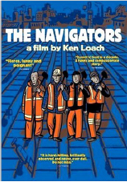

Diego Szlechter, Gustavo Gibert, Santiago Iorio y Roxana Sánchez
Desde los inicios de los setenta del siglo pasado, se observó un cambio productivo y organizacional de magnitud. La mejor imagen para graficar esos cambios es la de la red. Pero es un fenómeno que tiene muchas aristas, como veremos a lo largo de este capítulo.
En primer lugar, cabe señalar la pérdida de centralidad del Estado-nación como actor articulador de las relaciones políticas y económicas, fenómeno que ha sido una constante observada a lo largo de las últimas décadas desde diversas disciplinas (ver Castells, 2000; Keohane y Nye, 1998; Messner, 2003; Salamon, 1994).
Existe en la literatura organizacional, además, un cierto consenso acerca de que el proceso acaece a la par de un cambio desde un patrón productivo fordista –forma de organización de la producción que analizamos en los capítulos previos– hacia un esquema toyotista-posfordista todavía en curso (ver Boltanski y Chiappello, 2002; Coriat, 1994a).
Esta dinámica político-económica y productiva también ha tenido su impacto en la arena organizacional: gracias al abaratamiento de los costos de procesar velozmente grandes volúmenes de información y a la mayor movilidad de algunos factores de producción, entre otros elementos, se ha pasado de un marco en el que las organizaciones llevaban adelante todas sus actividades in-house (al buscar integrar, de manera maquinal, vertical y horizontalmente todas sus tareas), a una lógica de red (ver Recio, 2000), en la que las organizaciones pasaron a enfocarse en desempeñar solo aquellas tareas definidas como centrales. En este esquema de trabajo en red las firmas pasaron a concentrarse en aquellas actividades en las que contaban con una ventaja competitiva (término del management ortodoxo, acuñado por Prahalad y Hammel, 1990), mientras que el resto de ellas pasaron a ser desempeñadas por contratistas, y/o a través de alianzas estratégicas, u otro tipo de arreglos interorganizacionales. En breve, se pasó de una realidad organizacional centralizada, basada en la estandarización de procesos, a otra de organizaciones en red, adhocráticas (ver Mintzberg, 2005), que trabajan por proyectos, y pasan de poner el eje en el control –en el interior de la organización y hacia su entorno–, al eje en la coordinación: con una mirada de las organizaciones como si fueran “cajas de contratos”, al decir de Boltanski y Chiapello (2002), como profundizaremos en breve.
Paralelamente a este proceso, un emergente de alcance crecientemente global se advierte a fines de los setenta del siglo anterior: la pérdida de la centralidad del Estado en tareas de gran impacto social durante la primacía económica del fordismo, es decir, el debilitamiento de lo que Rosanvallón (1995) denomina “el Estado providencia”. El marco analítico –operativizado en políticas públicas muy precisas– desde el que se reconfigura el Estado, en línea con la idea de que el modelo de gestión del Leviatán se hiciera de acuerdo a parámetros gerenciales, se llamó “nueva gestión pública”, tema que trabajaremos en el próximo capítulo. El modelo gerencial que se tenía en mente era, precisamente, el de las organizaciones privadas posfordistas.
Adicionalmente, este retiro del Estado llevó a que quede raleado el terreno de la provisión de bienes sociales: desde allí se observa, con Salamon (1994), una “revolución asociativa”, esto es, el momento en el que el así denominado “tercer sector” emerge con fortaleza, como una miríada de actores a tener en cuenta al momento de analizar cómo se moldea la arena, el panorama socioeconómico y político a fines del siglo pasado. Nos dedicaremos en el próximo capítulo a analizar este fenómeno en perspectiva global, pero destacaremos los caracteres que ha presentado en nuestro país.
La utilización del concepto de metáfora de manera pedagógica permite observar las transformaciones en la forma de pensar las organizaciones a medida que pasa el tiempo, pero esas miradas de la organización tienen que ver con determinados contextos sociales. No hay modelo que nazca de un repollo, sino que tiene que haber procesos históricos más amplios que van modificando la manera en que nosotros no solamente observamos la organización, sino la manera en que actuamos en contextos organizacionales. Y eso tiene que ver con cuestiones de más largo alcance, a veces influidos por variables geopolíticas o por los paradigmas económicos imperantes, producto siempre de relaciones de poder; ya sea en el interior de los países, o a nivel regional o internacional.
El taylorismo nació no solo por la aparición en la escena de Frederick Taylor, a quien se le ocurrió una teoría acerca de la organización, para luego ser reemplazado por Henry Ford, Elton Mayo, Ludwig Von Bertalanffy y Ohno. A veces, el contexto de surgimiento de un paradigma organizacional se da con mayor fuerza en algún país y después se va propagando al resto del mundo; hasta aquí hemos visto que los paradigmas organizacionales taylorista, fordista y la escuela de relaciones humanas emergieron principalmente en los Estados Unidos, pero la teoría de sistemas es obra del biólogo alemán Ludwig Von Bertalanffy, y que, a su vez, las ciencias sociales se ocuparon de pensar dicha teoría para el mundo de las organizaciones a través de la Universidad de Harvard, en los Estados Unidos, con Wilfredo Pareto y Talcott Parsons, o autores como Freeman, con la teoría de la contingencia, y Lawrence y Lorsch con la teoría ecológica de las poblaciones. Varios autores que abrevan en la teoría de los sistemas de la biología, la incorporaron a las ciencias sociales y al mundo de las organizaciones. Pero a partir de la década del sesenta, la mirada de la organización empezó a girar hacia las interacciones sociales que suceden dentro de ellas y dio surgimiento al fenómeno del posfordismo u ohnismo.
|
El ohnismo Para entender el contexto de surgimiento del ohnismo, que toma su nombre de Taiichi Ohno (1912-1990), un ingeniero y autor japonés que trabajó en Toyota casi toda su vida, es necesario repasar algunos eventos que incidieron en la consolidación de un sistema de trabajo que se propagó por todo el mundo. En 1949, la empresa Toyota sufrió una crisis financiera que la dejó al borde de la quiebra y puso en marcha un drástico plan de ajuste que incluyó el despido de muchos trabajadores. En 1950, se desencadenó una huelga que duraría dos meses y que terminaría con el despido de 1600 obreros y la dimisión del presidente de la compañía, Kiichiro Toyoda. Dos años más tarde, frente al intenso movimiento de racionalización de la producción, se desencadenó una nueva ola de luchas obreras con un fuerte respaldo de los sindicatos. El movimiento de reivindicación salarial y de resistencia obrera continuó por 55 días. El conflicto terminó con otra derrota |
|
Uno de los hechos más importantes para el ohnismo ocurrió en 1953, cuando estalló la guerra entre Corea del Sur y Corea del Norte. Estados Unidos participó en ayuda de los surcoreanos. Como cualquier ejército en un conflicto bélico, las tropas estadounidenses necesitaban proveerse de insumos en un tiempo acotado. En ese entonces, Japón se encontraba en medio de una recesión económica con despidos masivos. De pronto, la guerra provocó un incremento en la demanda de municiones, uniformes y alimentos, entre otros insumos, lo que significó para Japón la oportunidad de revitalizar su economía. En épocas de guerra, las empresas no contratan masivamente trabajadores para proveer de insumos a un conflicto cuya duración es imposible de estimar, por lo que se debía hacer frente a la demanda sin aumentar la cantidad de personal. ¿Cómo se solucionó esto en Japón? Con el aumento de la productividad, la automatización de la producción y la intensificación del trabajo. Si el objetivo era no contratar más personal, las empresas japonesas, entre las cuales Toyota fue la más representativa, tenían que producir más con la misma cantidad de trabajadores. |
Benjamin Coriat (2000), en su libro Pensar al revés, propone pensar el proceso productivo de una manera opuesta a la que se concebía hasta ese momento, es decir, pensarla de adelante para atrás o desde el final hasta el principio. ¿Cómo pensaban Taylor, Mayo y Ford el proceso de trabajo? En términos de flujos empujados: había que aumentar la producción y la productividad para que haya más consumo, y esto se lograba forzando el consumo, “empujando” los productos al mercado. El consumo de masas va a depender de la producción de masas. Los mecanismos de consumo forzoso van a ser sutiles, como los agentes de ventas que estimulen el consumo, la apertura de concesionarias de autos en todo el país, la construcción de caminos para los autos para estimular el gusto por el paseo. El objetivo es que el consumidor o la consumidora no se den cuenta que los están induciendo a comprar.
Todo estaba enfocado desde la oferta, lo importante era producir mucho ya que a alguien se lo iban a vender. El contexto de la Segunda Guerra Mundial (1939-1945) ayudó mucho a expandir el fordismo. En esta guerra hubo ganadores y perdedores. ¿Qué pasó con Europa y Japón, que habían quedado devastados? Finalizada la guerra, Estados Unidos propuso un plan de reconstrucción de Europa y Japón llamado “Plan Marshall”, que consistía en la ayuda económica por unos 12000 millones de dólares a valores de hoy, para la reconstrucción de aquellos países de Europa devastados tras la Segunda Guerra Mundial. El plan duró de 1948 a 1951. Los objetivos fijados en él consistían en reconstruir las zonas destruidas por la guerra, eliminar barreras al comercio, modernizar la industria europea y promover la recuperación del continente. Todos estos objetivos estaban destinados a evitar la propagación del comunismo, que tenía una gran y creciente influencia en la Europa de posguerra. Las condiciones del Plan Marshall se basaban en el compromiso de disminuir las barreras al comercio entre países, una menor regulación económica y la incorporación de nuevos modelos de negocio.
El objetivo central de los Estados Unidos era transformar a estos países en economías de mercado abiertas, una suerte de “bloque capitalista” que le pusiera freno al bloque comunista. Con los fondos que estos países recibirían, debían comprar insumos y productos finales manufacturados a los Estados Unidos, con lo que ayudarían a que muchas firmas estadounidenses pudieran expandirse, transformándose en verdaderas empresas multinacionales (se instalarán también en la Argentina) que pudieran seguir produciendo de manera masiva y ubicar sus productos en cualquier lugar del mundo. Como Europa había quedado totalmente devastada, las posibilidades que se abrían para las firmas estadounidenses eran enormes gracias a los subsidios que recibía el continente europeo por parte del Plan Marshall.
En este escenario, el fordismo pudo florecer de manera casi libertina hasta que encontró sus límites cuando, en la década del setenta, la productividad de las economías capitalistas empezó a estancarse, con la concomitante merma en la tasa de ganancia. Al respecto, la tesis central de Coriat es que el ohnismo es equivalente al taylorismo. ¿En qué sentido ambos son equivalentes? En que ambos, Taylor y Ohno, pretenden erigirse, cada uno en el momento histórico que le tocó vivir, como los creadores de un nuevo discurso del método. ¿Qué significa un discurso del método? Que nos enfrentamos a un nuevo one best way, es decir, una nueva y mejor manera de hacer las cosas de alcance universal. Es como decir “esto es válido no solo para Toyota, sino para todo el mundo, para cualquier situación, para cualquier circunstancia”, por eso se habla de alcance global. En su momento, el taylorismo también se pensó con alcance global, incluso llegó a haber una sociedad taylorista internacional que pretendía instalar un discurso en torno a la organización del trabajo, de carácter universal, por eso fue disruptivo y es comparable al ohnismo.
¿Qué es el ohnismo? Según Coriat (1994a) es un sistema de organización del trabajo y tiene dos pilares. El primero, la “autonomatización”, que implica autonomía o autoactivación más automatización. ¿A qué refieren la autonomía y la autoactivación? La idea es establecer nuevos dispositivos de organización del trabajo en lo que Taylor y Ford llamaban el “trabajo de ejecución”. ¿De qué manera? Introduciendo la gestión de la calidad en el trabajo de ejecución. Ohno va a tomar de la industria textil un principio fundamental para evitar que, cuando se produzca una falla, afecte a los pasos siguientes del proceso productivo. Para esto, la solución era que las máquinas puedan detenerse automáticamente cuando se detecte una falla. Gracias a la automatización en la detección de errores, las máquinas tendrán autonomía para frenar, para auto-pararse, cuando se detecte un error. Por otra parte, los operarios y operarias tendrán la posibilidad –y la responsabilidad– de auto-activar las máquinas una vez solucionado el problema, para que se reinicie el proceso. De aquí este neologismo, esta palabra inventada, “autonomación”, para describir la combinación entre autonomía de las máquinas automatizadas y la autoactivación de estas por parte de los operarios, lo que también requiere de autonomía. Por eso Coriat habla de la “autonomación” y su extensión a la “autoactivación”. Es preciso destacar que máquinas y operarios se piensan como un todo integrado.
Pero ahora los trabajadores y trabajadoras van a empezar a ser responsables por la calidad de los productos en el proceso de producción. ¿Quiénes llevaban adelante antes del ohnismo la gestión de la calidad del producto y del proceso productivo? Los empleados encargados del trabajo de concepción y control, propio de los supervisores y jefes. En términos de Fayol, Taylor y Ford, los que pensaban se dedicaban a la calidad. Ahora Ohno propondrá que la calidad atraviese a toda la organización del trabajo, no solamente a los directivos, a los gerentes o a los supervisores. ¿Con qué lógica se va a trabajar? Con la del just in time (jit), que quiere decir “justo a tiempo”. Este es el segundo pilar según Coriat, y de aquí viene el título de su libro Pensar al revés.
¿Pero qué significa producir “justo a tiempo”? De aquí en más se va a trabajar con una lógica de flujos tirados, en oposición a la lógica fordista-taylorista de flujos empujados. El fordismo alcanza sus objetivos “empujando” lo que se produce hacia el mercado, a través de estrategias de consumo “forzoso”. En contraposición, con el jit la firma estará “sentada” esperando a que el mercado le demande algún producto que esta fabrique, para, cuando esto suceda, ponerse en movimiento inmediatamente: esta es la lógica de flujos tirados. ¿Cuándo se va a fabricar? Justo a tiempo. ¿Qué significa justo a tiempo? Que el consumidor va a decidir cuándo quiere consumir algo y esa demanda irá hacia atrás: partirá desde la boca de expendio hasta la línea de producción. Esa es la idea figurada, exagerada, de una fábrica ohnista. ¿Qué implica trabajar justo a tiempo? Implica trabajar con cero stock de productos y de sus insumos dentro de la fábrica, ya que los proveedores abastecerán de insumos a medida que la fábrica los necesite. ¿Qué significa esto? La fábrica japonesa es conocida como keiretsu, que en japonés significa “pirámide”. ¿Cómo se trabaja realmente con cero stock? En realidad este concepto no es una novedad. En rigor, Ford ya hablaba de trabajar de esa forma cuando se refería al movimiento perpetuo de la fábrica, que supone disponer de una fábrica integral que desarrolla sus propios insumos y, de esta manera, manejarse con cero stock. Es decir que la fábrica nunca paraba y se proveía a sí misma de insumos.
Es importante que nos detengamos un momento en este término, keiretsu, ya que es el antecesor del modelo de empresa-red, que veremos más adelante. En el modelo de Ohno, la terminal de Toyota está en la punta de la pirámide. ¿En qué sentido? Toyota fabrica muy pocas cosas, es una terminal automotriz y el proceso de producción termina en esta empresa. Probablemente Toyota fabrique solamente el chasis y el motor del auto, y realice el ensamblado. ¿Pero, entonces, quién fabrica el resto de las partes de los autos Toyota? Miles de proveedores que responden directa o indirectamente a los requerimientos de Toyota. Por eso es una pirámide: a medida que bajamos, encontraremos al proveedor de carrocería, que
a su vez recibirá la chapa con la que se fabrica la carrocería de otro proveedor,
que a su vez recibirá los tornillos para ajustar la carrocería de otro proveedor, y así sucesivamente. A medida que nos alejamos de la terminal y descendemos en la pirámide, vamos a encontrar lógicas productivas cada vez más tayloristas. ¿Quién impone el ritmo de producción? Toyota. ¿En base a qué? En base al just in time, es decir, al ritmo de las ventas; o sea, de alguna manera, es el consumidor ahora quien impone la intensidad de trabajo de la fábrica de tornillos, de cables, etcétera. Esta intensidad se activa con las ventas y se traduce en pedidos a Toyota que descienden por toda la pirámide de contratistas y subcontratistas de la terminal, y así activa la producción de miles de autopartistas coordinadas entre sí.
Para ilustrar cómo se maneja la fábrica de Toyota, imaginemos camiones dando vueltas alrededor de la planta proveyéndole de insumos justo a tiempo. ¿Por qué tiene lógica de empresa-red? ¿Por qué podemos decir que es una empresa-red? Porque Toyota trabaja en red con sus proveedores, y desarrolla múltiples relaciones contractuales para producir lo que se necesita. Pero estas relaciones las establece de manera muy verticalista: la que decide cuánto necesita de cada cosa es la que está arriba en la pirámide. La única que trabaja realmente con el método ohnista es la que está en el ápice de la pirámide, es decir, Toyota.
El sociólogo francés André Gorz (1997), en su libro Miserias del presente, riquezas de lo posible, ofrece un ejemplo muy ilustrativo de la firma Toyota de fines de la década del ochenta y principios de la del noventa del siglo pasado, que ayuda a comprender la dimensión del modelo ohnista. Según el autor, Toyota se encuentra en la cúspide del keiretsu, la pirámide que representa la miríada de firmas que participan de la producción de un vehículo de esa marca. Debajo de Toyota hay 45.000 pymes que, directa o indirectamente, están vinculadas a esta, proveyéndola de insumos, autopartes y servicios.
Lo interesante del ejemplo que trae Gorz es que la abrumadora mayoría de estas 45.000 pequeñas y medianas empresas no trabajan con el método ohnista. Esto confirma la tesis de la complementariedad teórica de Ibarra Colado (1991), que vimos en el capítulo 4. ¿Por qué? Porque el ohnismo no viene a romper ni a desterrar el modelo anterior; simplemente el modelo de Ohno se viene a “montar” sobre los desarrollos organizacionales de Ford y Taylor, así como sobre Mayo y la escuela de relaciones humanas. Los modelos no solo se van “montando” unos sobre otros, sino que, a veces, se entremezclan, como en el caso de la empresa-red, en la que coexisten, en la misma red, firmas que operan bajo paradigmas tayloristas con otras en las que prima el ohnismo. Incluso a veces la misma fábrica puede tener sectores de uno y otro modelo. El economista español Albert Recio (2000) va a tener mucho para decirnos sobre este nuevo modelo de empresa y cómo las relaciones que se construyen en torno a él inciden sobre la distribución de las ganancias producidas por nuestras sociedades y sobre las relaciones entre capital y trabajo. En unas páginas profundizaremos en los conceptos de este autor.
Otra de las cuestiones según las cuales Coriat sostiene que Taylor es comparable a Ohno es porque ambos funcionan como soportes de la valorización del capital. ¿En qué medida Ohno es innovador en la forma en que valoriza al capital? Según Coriat, el ohnismo propone una nueva economía del tiempo. El investigador argentino Julio Neffa (1990), en su texto El proceso de trabajo y la economía del tiempo, señala que todo dispositivo que permita economizar tiempo terminará imponiéndose, y esto es posible verlo confirmado en el ohnismo, que logró encontrar una nueva forma de economizar tiempo, al conciliar productividad con flexibilidad. Esto implica que, a partir de ahora, se podrá romper con el obstáculo que había hecho tambalear al fordismo: el estancamiento de productividad al que se había llegado en la década del setenta. Con el ohnismo se podrá aumentar la productividad al lograr mayor flexibilidad en el proceso productivo. Según Coriat, el ohnismo es posfordista, es decir posterior al fordismo, porque la competencia, a partir de la década del setenta, empezó a basarse en la calidad y en la diferenciación de los productos, y no tanto en producir de manera masiva y repetitiva productos en serie, estandarizados, sin ninguna diferencia entre sí.
Ya no se trata de fabricar solo autos negros, como hacía Ford a principios del siglo xx. Ahora el objetivo es empezar a generar productos de buena calidad y variados en cuanto al diseño. Esto se debe al aumento del nivel de vida de la población, que empezó a requerir consumir productos diferenciados respecto de aquellos consumidos por los estratos más bajos, especialmente en Occidente y en los países más desarrollados. El desarrollo económico de las sociedades europeas y de la estadounidense conllevó un proceso de sofisticación de las formas de consumo, que implicó la incorporación de criterios del gusto basados en la distinción (Bourdieu, 1998). Este proceso es muy importante para comprender el capitalismo; cuando se produce una mejora en el nivel de vida de un sector de la población, este pretenderá distinguirse de otros grupos sociales con menos recursos. Así, por ejemplo, se producirá una estratificación del consumo de automóviles, en la que existirán varias gamas de autos para diferentes niveles socioeconómicos.
La diferenciación que propone el ohnismo conlleva especialmente cambios en la forma. Para el caso de los automóviles, el “corazón” del auto –el motor– probablemente sea similar para las diferentes gamas, pero lo importante es que el consumidor perciba que está comprando un producto diferenciado, que lo distingue de otros consumidores. Debido a la existencia de información imperfecta en el mercado, el consumidor no puede saber cuan similares son los productos en su composición; en este sentido, la fábrica “sabe” mucho más que el consumidor acerca de las características del producto que fabrica, pero la publicidad del auto ayudará a la percepción de distinción por parte del consumidor. Muchas veces, un mismo proveedor le suministra autopartes a diferentes marcas de autos, pero si esto se muestra a la población de manera descarnada, será muy difícil conseguir vender productos “distinguidos”. Muchos autos que se suelen llamar de “alta gama” se deben a los accesorios que se les adosan para distinguirlos de los modelos de “baja gama”. Lo importante es que el consumidor esté dispuesto a pagar por un producto que lo “distinga”. El posfordismo, entonces, se va a montar sobre el fordismo. Ahora se trata también de producir en serie, pero productos diferenciados.
Otra de las novedades que trae el ohnismo es que logra maximizar aún más que el fordismo la tasa de ocupación de las y los trabajadores. Ford había conseguido aumentar el plus-trabajo relativo, al lograr que con las mismas ocho horas se produzca más plusvalía, porque la cinta de montaje acercaba el proceso de trabajo al trabajador, por lo que este no tenía que movilizarse para buscar las herramientas y los insumos para montar el auto. Así se logró aumentar la intensidad en el trabajo. Si con Ford parecía que se había logrado la maximización de la ocupación del trabajo, Coriat señala que, con el ohnismo se logra aumentar aún más la tasa de ocupación, no solo de hombres y mujeres sino también de herramientas.
Otra característica del ohnismo, que reafirma su descripción como un nuevo discurso del método, es que Ohno logró transformar el movimiento de racionalización del trabajo en un movimiento de desespecialización. El movimiento de hiperespecialización del trabajo que proponía Taylor va a ser trastocado, ya que se va a producir un movimiento opuesto de desespecialización. El trabajador o la trabajadora ya no van a realizar una única tarea repetitiva, porque en algún momento la productividad se estanca, ya sea por cansancio o por aburrimiento. El movimiento de desespecialización va a producir una nueva manera de racionalización del trabajo. De aquí en más, se va a volver a atacar al oficio como lo hacía Taylor, pero esta vez para aumentar la intensidad del trabajo al recalificar a los trabajadores. Es decir, el ataque al oficio se hará de manera diferente. A los obreros y obreras que realizaban una única y monótona tarea, típicamente taylorista o fordista, ahora se los va a incluir en tareas múltiples, tornándolos polivalentes. ¿Qué significa esto? Por ejemplo, que al que solamente limaba la llanta de madera de los autos Ford T, ahora se le asignarán varias tareas simultáneas que, además, serán compartidas con otros trabajadores. Es decir, entre varios trabajadores que integran un equipo y que interactúan entre sí, van a fabricar una parte del automóvil. Todos van a saber hacer varias tareas y van a poder compartir experiencias de trabajo, y generarán así un mayor aprendizaje del oficio.
El método Kanban es central para obtener una visión integral del proceso de trabajo ohnista. Está directamente vinculado con el justo a tiempo e implica descentralizar las tareas de planificación del taylorismo y fordismo. Ahora el trabajo de planificación y concepción no va a estar depositado únicamente en los jefes y supervisores. Si bien en parte va a continuar centralizado, será mucho menos que antes.
|
Kanban y just in time El método Kanban consiste en un sistema de tarjetas que, según Coriat (2000), nació en los supermercados japoneses. Todo comienza cuando un repositor se dirige a la góndola y nota que faltan productos de un fabricante, entonces le solicita a su superior inmediato, el jefe de depósito, la reposición de estos productos. Si el depósito se quedó sin stock, el jefe deberá comunicarse con la firma proveedora para que envíe más productos y es recién en ese momento que la empresa se pondrá a producir más unidades para reponerlas en la góndola. Toda la comunicación se hace con el método Kanban, es decir, con tarjetas en las que se vuelca esta información que viaja “hacia atrás”. Toyota adoptó este método y gracias a él pudo activar la producción justo a tiempo: cuando se recibe un pedido, en la planta se inicia la solicitud de reposición de stock de las piezas “faltantes” para la producción. Así, se logra contar con una fábrica mínima, “limpia” de existencias y automatizada, en la que los operarios pueden controlar con la vista, en una suerte de “dirección por los ojos” del proceso productivo. |
¿Por qué se habla descentralizar la planificación? Es en oposición a la lógica fordiana de planificar ¿Qué hacía Ford? Fabricaba millones de vehículos y les pedía a sus agentes de ventas que los vendan, ayudándolos por medio de la publicidad. Ahora es al revés, porque se fabricará solo cuando falte el producto en el mercado y esa señal viaja “hacia atrás” para poder dar la orden de fabricación. En la práctica, el ohnismo no funciona exactamente así, ya que, si Toyota no produce publicidad, los consumidores no van a querer comprar autos de esa marca. El modelo del justo a tiempo no se plantea cómo se forman los gustos de la gente; hay maneras de inducir el gusto y el deseo de la gente. Es necesario hacer creer al consumidor que no solo tiene que desear un Toyota, sino que, además, tiene que desear cambiarlo cada cinco años. Por eso, se buscará que la obsolescencia de los productos también pase a ser programada.
El ohnismo intenta entonces recuperar lo que Taylor trató de destruir: el oficio. Lo que propone es un retorno a prácticas pretayloristas ligadas al oficio, pero de una manera resignificada. ¿Por qué? Porque el mencionado repositor tiene como tarea principal controlar los stocks de los productos y esto ya no es algo tan estandarizado, porque está participando de alguna manera de las tareas de planificación de la producción. Taylor le hubiese ordenado al repositor que se ocupe solo de ordenar los productos en la góndola. Pero ahora, de repente, el obrero tiene que ocuparse también de la planificación de la producción; participa de eso porque tiene que comunicar a su jefe que la fábrica empiece a producir los productos faltantes. Si bien el ejemplo es un tanto exagerado, ilustra muy bien la esencia del ohnismo.
Lugo de tres años de la publicación de Pensar al revés, cuya primera edición en francés había sido en 1991, Coriat (1994a) escribe el artículo “Taylor, Ford y Ohno. Nuevos desarrollos en el análisis del ohnismo”, en el que defiende sus tesis fundamentales, y discute con algunas posturas que plantearon que el ohnismo constituía una variante del taylorismo desde el punto de vista de la repetitividad y fragmentación de las tareas. Para organizar la defensa de sus ideas sobre el ohnismo, Coriat realiza una comparación sistemática con distintas escuelas de organización del trabajo. Así, avanza primero en comparar al ohnismo con el taylorismo, luego con el fordismo y, finalmente, respecto a la escuela sociotécnica. Revisemos críticamente algunos de sus argumentos.
El ohnismo y el taylorismo son bien diferentes, al menos en apariencia. Una de las diferencias es la naturaleza del trabajo concreto. ¿Qué diferencias se observan en la manera de trabajar entre el método taylorista y el ohnista? Algunos sostienen que en realidad son lo mismo porque el ohnismo se apropió del estudio de tiempos y movimientos del taylorismo. Sin embargo, Coriat sostiene que el ohnismo propone un estudio de tiempos y movimientos, pero sin la administración científica. ¿Qué hizo Taylor con el estudio de tiempos y movimientos? Desmigajó y desmenuzó el proceso productivo, todos los saberes implicados en él, incluyendo las operaciones más elementales posibles; luego Ford lo sofisticó aún más, pero la idea de luchar contra el oficio era que cada uno realice una sola cosa con el fin de cronometrarla e imponerle estándares de tiempo muy rigurosos.
¿Cómo lo hacía Taylor? Tomaba al trabajador más rápido, más habilidoso, le tomaba el tiempo y ordenaba que el resto imitase su ritmo de trabajo y sus movimientos. ¿Cuál era el objetivo? El objetivo central era encontrar a ese trabajador habilidoso para proponerlo como el one best way, la única y mejor manera de hacer las cosas, para luego intensificar cada vez más el trabajo de todos los obreros, pero a partir de un determinado estándar. Según Taylor, ¿cómo se coordina el trabajo entre los diferentes niveles jerárquicos? De manera verticalista, los de “arriba imponían” y los de abajo debían acatar; en eso consistía el taylorismo. Pero la autonomación que propone el ohnismo incluye autonomía y automatización, y utiliza el estudio de tiempos y movimientos de una manera diferente.
¿Cuál es el componente elemental del trabajo ohnista y en qué se diferencia del taylorista? Si el componente elemental del trabajo taylorista era el trabajo especializado, parcelado y desmigajado, el componente elemental del ohnismo no es un trabajo muy especializado, sino que es un conjunto de actos productivos que son transferibles a otra unidad productiva. Como ahora van a trabajar en equipo, el que en el modelo anterior realizaba una única tarea repetitiva, ahora va a realizar varias tareas más y, además, va a hacerlo en coordinación con sus pares. Entre todos van a ir rotando y van a ser polivalentes. La unidad elemental de trabajo va a ser un conjunto de actos productivos, siempre dentro de un mismo equipo de trabajo, en el que se comparte información y saberes. La referencia para medir la productividad ya no va a ser el individuo sino el equipo y esto se opone al principio taylorista de repetitividad, porque la gente no hace todo el tiempo lo mismo, sino que va rotando en diferentes tareas. A esto refiere la idea de trabajo polivalente.
|
Polivalencia La polivalencia refiere a una forma de trabajo que pretende ser “enriquecedora” para los trabajadores. La polivalencia implica rotación, ya que, en el interior de un equipo, los trabajadores y las trabajadoras tienen asignadas diferentes tareas que no solo agregan valor al producto/servicio, sino que suponen la implicación mental del obrero en esas tareas. Muchos trabajos en el posfordismo aspiran a tener el carácter de polivalentes, pero incluyen tareas que no son enriquecedoras, a pesar de que algunos autores las consideran polivalentes. Un ejemplo de esto ocurre en la cadena de comidas rápidas McDonald’s, en la que los trabajadores realizan varias labores, sin que sean precisamente tareas “calificantes”. |
En el ohnismo no existe una única y mejor manera de hacer las cosas, y si en realidad existe, esa única y mejor manera es el justo a tiempo, es producir lo que el cliente demanda, en el momento preciso. Esta “única y mejor manera” va cambiando acorde los deseos y las necesidades del consumidor/cliente. La manera de producir del ohnismo se irá guiando por la mejora y el perfeccionamiento continuo. ¿Cómo se perfecciona y se mejora de manera continua? Por iniciativa de los propios operarios, a quienes les fue otorgada esta responsabilidad. ¿Cómo lo van a hacer? En los denominados círculos de calidad. Después de la jornada de ocho horas de trabajo se van a reunir “de manera voluntaria” en grupos, llamados círculos de calidad, en los que se van a proponer mejoras a partir de lo que observaron durante la jornada de trabajo. Las propuestas, la mejora y el perfeccionamiento continuo no tienen que ver con proponer la compra de una nueva maquinaria, sino que es en escala mucho más pequeña. Un ejemplo puede ser la instalación de una cortina porque la entrada de la luz solar en un momento del día encandila y dificulta la visión para manejar correctamente una máquina; las propuestas de mejora continua suelen ser a escala infinitesimal.
En Toyota, la evaluación del desempeño de los trabajadores de nivel jerárquico más bajo, está basada en la cantidad de propuestas de mejora continua que presentaron en los círculos de calidad (en los que participaron de forma “voluntaria”), otorgándoles un aumento salarial por encima del convenio colectivo de trabajo de acuerdo a la cantidad relativa de propuestas respecto a sus compañeros de trabajo. En el capítulo anterior, cuando brindamos el ejemplo de la firma japonesa Matsushita referido a culturas organizacionales, hablamos de “voluntad por mejorar”. ¿Qué sucede si un obrero u obrera necesita irse a su casa a atender obligaciones familiares una vez terminada la jornada de trabajo? ¿En qué medida los obreros tienen la opción de participar de forma “voluntaria” en los círculos de calidad? Paulatinamente, todo lo que Ford pretendía que el trabajador dejase fuera de la fábrica, como las relaciones afectivas, la creatividad, el ingenio, ya que pertenecía a la esfera privada, al tiempo libre, al ocio, de aquí en más el ohnismo lo va a incorporar al proceso productivo. Según Henry Ford, cuando sonaba la sirena que señalaba el fin de la jornada de trabajo, el jefe debía seguir pensando en el trabajo para ver cómo mejorar al día siguiente. Pero el trabajador subalterno no debía hacer esto, sino que tenía que dedicar las horas libres para recuperar sus energías físicas. La división de clases en la sociedad fordista se basaba en los que piensan todo el día por un lado, y los que ejecutan solo en el horario de trabajo y descansan el resto del día, por otro. Por eso, la primera diferencia entre el taylorismo y el ohnismo es que Ohno propone que ahora todos y todas se tienen que comportar como si fuesen jefes o jefas… aunque no lo sean.
La segunda diferencia radica en que ambos modelos remiten a economías de tiempo y principios de eficiencia bien distintos. En el taylorismo existen tiempos asignados y estándares rígidos. ¿Quién los define? La oficina de métodos y tiempos. Por su parte, en el ohnismo, los tiempos son compartidos, los estándares son flexibles y los operarios participan en la definición de los tiempos y movimientos, contradiciendo el principio del one best way (la única y mejor manera de hacer las cosas) taylorista.
Otra de las diferencias entre ambos se basa en que el taylorismo propone una tecnología social para controlar al obrero individual en su puesto. Sin embargo, en el ohnismo, la economía de tiempo será de naturaleza sistémica, es decir, que se van a controlar los tiempos y movimientos, pero no del obrero individual, sino del equipo en su conjunto. Esto aumentará la eficacia del control porque de aquí en más son los pares, los compañeros de trabajo, quienes van a controlar el trabajo de cada obrero. De esta manera, se va a perder eficacia en el nivel de intensidad ejercida sobre el trabajador individual, pero se va a ganar eficacia en lo que Coriat llama “intensidad conexa”, es decir, que se va a pasar a intensificar el trabajo del equipo en su conjunto: en lugar de aplicarlo de manera directa sobre el trabajador, se lo hará sobre el equipo de trabajo, lo que permitirá emparejar la producción en función de aquellos trabajadores más productivos. ¿Cómo se logra esto? Por el control de pares. Si un trabajador es más lento, el resto de sus compañeros lo observará y le indicará que debe aumentar la intensidad de trabajo para no perjudicar al equipo, ya que no solo los premios sino también los castigos pasarán a ser colectivos, del equipo. La idea de trabajo en equipo retomada por Ohno fue propuesta por los teóricos de la escuela de relaciones Humanas, abonando, una vez más, a la “tesis de complementariedad”.
En Watanabe (1997), se menciona un fenómeno que emergió a partir de la década del setenta del siglo pasado con el auge del toyotismo, llamado karoshi,41 que en japonés significa “muerte por exceso de trabajo”. ¿Cómo se vincula este concepto con la organización del trabajo? En Japón, a partir de la década del setenta aumentó de manera exponencial la muerte súbita en el espacio del trabajo por fatiga. El ohnismo generó un incremento en la intensidad del trabajo. Taylor, Ford y Ohno buscaban que el trabajador se sintiera “satisfecho”, que se fatigue menos, pero terminaron logrando exactamente lo contrario.
¿Qué diferencias hay entre el ohnismo y el fordismo? De acuerdo con Coriat, son las mismas que con el taylorismo, pero se suman algunas diferencias más que se deben a las innovaciones que implementó Ford en el espacio de trabajo. Una de las propuestas novedosas de Ford es el flujo continuo. La máquina prototípica de Taylor era la de propósitos universales, es decir que podía realizar varias tareas. ¿En qué innova Ford? En la cadena de montaje y la cinta transportadora, que asegura un flujo continuo del proceso productivo, un movimiento perpetuo de la fábrica. En Coriat (1994a: 13), hay un cuadro que resume las principales diferencias entre el fordismo y el ohnismo. Dentro de estas, resaltamos dos: mientras Ford propone producir el máximo en un tiempo dado, Ohno propone producir solo las cantidades demandadas por el mercado y hacerlo justo a tiempo. Sobre esos dos puntos de partida diferentes, se asientan los dos sistemas productivos que referimos más arriba: el de flujos empujados de producción en masa para el fordismo, opuesto al de flujos tirados de pequeñas series diversas del ohnismo. Según Coriat, esto se adapta mejor a la época de la competencia a través de la diferenciación, porque se pueden producir de manera individual bienes únicos.
Finalmente, Coriat compara al ohnismo con la escuela sociotécnica. Según el autor, estas dos escuelas compiten entre sí, pero tienen muchas similitudes.
|
La escuela sociotécnica La escuela sociotécnica pretende reemplazar al fordismo en lo que hace a la organización del trabajo y es por ese motivo que se convertirán en competidoras. Esta escuela tuvo mucho más éxito en los países nórdicos, como Suecia. En cambio, el ohnismo tuvo más éxito en Japón. Cuando mencionamos las revueltas obreras y estudiantiles de la década del sesenta y del setenta, recordemos que dentro de sus consignas se apelaba al rechazo del trabajo bruto taylorista-fordista, que produjo un aumento de las huelgas, del ausentismo, la rotación y el aumento de los defectos de fabricación, lo que provocó una dramática disminución de la calidad de los productos. El argumento ohnista para explicar los defectos de fabricación se centraba en la falta de traslado de la gestión de la calidad a los propios trabajadores y trabajadoras de planta. Como se administraba la tarea de manera muy centralizada, no participaban de la gestión de la calidad, cuya consecuencia era producir mucho, pero con muy baja calidad. Se hacía necesaria una reforma en los modos de organización del trabajo, no solo para mejorar la calidad, sino para lograr que estos métodos sean mejor tolerados por los obreros y obreras. Es de esta manera que surge el movimiento del job enrichment, de ampliación o enriquecimiento de las tareas. El objetivo es que el o la trabajadora ya no realice una sola cosa, sino que se enriquezca y amplíe sus tareas, y logre un aumento de la productividad. Ahora van a aportar soluciones que van a surgir de ellos mismos, lo que a su vez permitirá enfrentar las restricciones de variedad. Cuando se fabrican solo autos negros porque el mercado los va a comprar, el modelo puede funcionar, pero cuando empezó a surgir competencia en torno a la variedad de automóviles, también empezó a ser necesario hacerlos mejor |
|
frente a las nuevas necesidades del mercado, producto del aumento del nivel de vida de la población y de la consecuente necesidad de sofisticar la forma de consumir. En este contexto, nace la escuela sociotécnica en la fábrica de automóviles Volvo. |
La fábrica modelo de la escuela sociotécnica fue la de la automotriz Volvo, en la ciudad de Kalmar, en Suecia; es un grupo de trabajo integrado o autónomo, como si fuese una empresa dentro de otra. Se fabrica un modelo de automóvil en una isla de producción con un número reducido de trabajadores, por ejemplo de alrededor de veinte operarios, que se encargarán de fabricar todo el auto. Esto implica un enriquecimiento de tareas muy importante; es la contracara del fordismo, porque en Volvo los obreros realizan todas las tareas vinculadas a la producción de un auto, transformando el proceso de trabajo en una suerte de neoartesanado, con lo que se retorna, de alguna manera, a la fábrica pretaylorista en la que los artesanos participaban en la elaboración de los productos. No obstante, debemos ser cuidadosos con lo que significa este “retorno”, en la medida de circunscribirlo a la recreación de las condiciones reflexivas y de interacción que supone el trabajo artesanal, ya que las experiencias de Volvo no supusieron un rechazo al progreso técnico. Si el taylorismo había luchado contra el oficio, la escuela sociotécnica pretenderá restituirlo con la distribución de tareas de cada vez mayor complejidad entre grupos reducidos de operarios dentro de una isla de producción.
¿Por qué Suecia fue el escenario del surgimiento de esta escuela? Ante todo, es un país al que le costó menos sobreponerse a la Segunda Guerra Mundial, porque había sido menos devastado que el resto de los países europeos, lo que le permitió una pronta recuperación económica. Por otro lado, Suecia había llegado a tener un índice de desempleo mínimo, lo que provocó que el movimiento obrero tenga mayor poder de negociación. Asimismo, el nivel de escolarización había aumentado de manera exponencial, lo que generó trabajadores con un alto nivel educativo que, a su vez, demandaron específicamente mayores niveles de calificación en el trabajo. Esto es muy interesante, desde el punto de vista de dar un debate e iniciar una exploración acerca de los efectos de los procesos de trabajo sobre el intelecto y cómo generar sistemas productivos que alimenten cierto enriquecimiento intelectual de las personas que realizan las diferentes tareas.42 La mezcla de alta escolarización y bajo nivel de desempleo en Suecia provocó, entonces, que Volvo deba negociar las condiciones de trabajo en una situación desventajosa respecto de las demandas del movimiento obrero. Es así como se propone esta búsqueda de experiencias de gran magnitud orientadas a encontrar alternativas al trabajo parcelizado, empujada por colectivos de trabajadores calificados que demandan altos salarios y autonomía.
El sociólogo André Gorz analiza la fábrica Volvo en Uddevalla, otro pueblo de Suecia, donde se había llegado al más alto grado de transformaciones del sistema productivo desde el punto de vista de la autonomía de los trabajadores y los efectos “enriquecedores” de la ejecución del trabajo. La fábrica había llegado a requerir una reflexión activa por parte los operarios. Gorz ubica la emergencia de esta experiencia en un contexto más amplio: en 1989 se inaugura la planta de Uddevalla, con un 2% de desocupación en Suecia. Pero pocos años más tarde, en 1993, las condiciones del contexto habían cambiado y Volvo decide cerrar la planta, con un 10% de desocupación en dicho país. La planta de Uddevalla era modelo, ya que había permitido revertir los efectos nocivos del taylorismo-fordismo sobre los trabajadores al diseñar procesos de trabajo en equipo y sin cadena de montaje. Era el producto de intensos debates con representación de diversos sectores sociales, en el que los universitarios y representantes sindicales jugaron un papel central. Pero esto solo fue tolerado en el marco de una desocupación casi nula y compuesta por trabajadores altamente calificados. Cuando se produjo un nuevo aumento de la desocupación, Volvo decidió cerrar la planta porque desde un principio su mantenimiento significaba un alto costo. Sus trabajadores obtenían salarios muy altos y, además, concentraban demasiado poder en relación con el sostenimiento del flujo productivo. Vemos nuevamente como los modelos organizacionales siempre están conectados con modelos sociales más amplios. La apertura de la planta de Uddevalla no se debió a la benevolencia del capital sino a la falta de alternativa para sostener los flujos productivos y la adhesión al trabajo, ante un contexto de bajo desempleo y alta calificación de los trabajadores. Cuando el contexto fue desfavorable para los trabajadores, esta experiencia fue desactivada. La reflexión de Gorz nos ayuda a pensar sobre el sentido profundo del diseño organizacional:
En el nivel de las opciones de producción, en el nivel del contenido de las necesidades y de su modo de satisfacción se sitúa la apuesta política del antagonismo entre el capital y el trabajo viviente. Esta apuesta es en última instancia el poder de decidir el destino y el uso social de la producción, es decir el modo de consumo al que ella está destinada y las relaciones sociales que ese modo de consumo determina (1997: 45).
Desde esta conexión entre “lo micro” y “lo macro”, volvamos a la caracterización de Coriat (1994a) sobre la escuela sociotécnica y su relación con las corrientes que estamos analizando.
Esta escuela comienza, desde fines de los setenta, a ensayar soluciones alternativas a la línea de montaje clásica, lo que fue puesto en práctica de variadas formas, y cuyo ejemplo más extremo es el mencionado sobre Uddevalla. Pero en realidad, la técnica que se desarrolló progresivamente no apela a principios nuevos o revolucionarios, sino que implicaba que, en la planta, exista un flujo continuo en la línea de montaje. Esto es similar al fordismo, porque la escuela sociotécnica se aplicó especialmente en terminales automotrices. La diferencia con la línea de montaje fordista es que la escuela sociotécnica la fragmenta, y en cada parte del proceso productivo se dispondrá una isla con un equipo de trabajo que va a administrar un stock de productos y de piezas. Cada isla va a fabricar una parte del auto, pero en lugar de trabajar con cero stock, lo hará con stock, tanto de las piezas para montar las partes del auto como de partes semiterminadas de él. Esto les permitirá seguir con la producción cuando se genera una demora en la provisión de insumos por diversas razones.
Así, el traspaso de una fase a otra del proceso de fabricación está asegurado porque siempre hay un stock colchón. Cada isla de trabajo, en términos sociotécnicos, se encarga de una parte del montaje de la producción global. La cantidad de elementos a fabricar en cada isla de trabajo se define a la manera fordista, porque lo sigue decidiendo la dirección. Por su parte, cada isla de trabajo va a administrar los tiempos. La dirección decidirá globalmente los tiempos, mientras que cada isla se va a autoadministrar el ritmo de trabajo. A cada isla se le va a imponer una cantidad. Los grupos se van a vincular a través de una cinta transportadora central y cintas paralelas que provean las piezas y herramientas para cada grupo. Eso permite, a diferencia del fordismo, suprimir pérdidas por concatenación. Entre cada isla ya no habrá pérdidas de tiempo porque se van a proveer permanentemente a través de cintas paralelas, no se va a detener la producción de un auto, no va a haber pérdidas de tiempo de transferencia de una isla a otra, lo que permitirá economizar tiempo.
El estudio de tiempos y movimientos es una garantía de conjunto sobre los tiempos de producción. En ambos modelos son iguales: lo que se plantea es un piso de productividad de los operarios. Otra de las características similares es que la productividad del conjunto no depende de la productividad individual. ¿Por qué? Porque la escuela sociotécnica tiene un enfoque sistémico. La productividad se le impone al equipo, a la isla de trabajo, mientras que el trabajo dentro del equipo se autorregula, por lo que existe la polivalencia, al igual que en el ohnismo. En ambos modelos hay control de calidad, mantenimiento, regulación del trabajo, aprendizaje dinámico, porque en el grupo los operarios van aprendiendo unos de otros en el marco de una educación recíproca, enriqueciendo los saberes individuales y colectivos.
¿En qué se diferencia la escuela sociotécnica del ohnismo? La ingeniería productiva de la escuela sociotécnica, es decir, la planificación de la producción, es de tipo fordista, y es muy importante el rol de los stocks colchón. Si de pronto se corta el ritmo de producción por algún motivo, por ejemplo, si una fase del proceso productivo se demora, el proceso de producción no va a hacer detener la cinta transportadora porque existe el stock colchón. En cambio, en el ohnismo, es preciso planificar todo el proceso de producción como si fluyese de manera continua. La escuela sociotécnica sigue siendo, en términos de programación de la producción, eminentemente fordista, es decir de flujos empujados. No hay just in time, no hay método Kanban, la lógica de la oferta sigue siendo fordista. En la escuela sociotécnica la visión del proceso productivo es fragmentada en islas de trabajo sin llegar a integrar toda la producción,43 como lo hace el ohnismo. El ohnismo, con el keiretsu, integra toda la producción. A su vez, en el ohnismo la integración apunta a estudiar los tiempos y los flujos entre los talleres y también entre el trabajo de concepción y de ejecución. Por el contrario, en la escuela sociotécnica no sucede esto, sino que hay alguien que concibe, que impone la cantidad y los tiempos de producción, y no se trata de integrar todo el proceso tal como lo hace la fábrica ohnista. La escuela sociotécnica se propone mejorar la empresa fordista, a partir del enriquecimiento de tareas de los operarios. No deja de ser fordista en la lógica de pensar el proceso de trabajo como flujos empujados.
Según Coriat, lo que se desprende tanto del taylorismo como del fordismo, en términos de concepción del hombre y de la organización del trabajo, es que el trabajador es un instrumento pasivo capaz de ejecutar órdenes y no demostrar ninguna iniciativa. Las concepciones que ven en el individuo aptitudes, valores, objetivos propios que deben ser incitados a participar en los objetivos de la empresa, que admite los conflictos entre la razón de ser de la organización y las aptitudes de sus miembros, corresponden a la escuela de relaciones humanas de Elton Mayo. Estos principios se aplican a los métodos de la organización fordista y taylorista. En términos de administración del conflicto, en la década del setenta del siglo pasado empiezan a fracasar los métodos para renovar las técnicas taylorista y fordista, ya que no alcanzaba con los resultados aplicados a partir de la escuela de relaciones humanas, sino que había que tocar las bases propias de la organización del trabajo, en las que las relaciones humanas están inmersas. En este sentido, era preciso promover formas de organización del trabajo innovadoras. Cuando estas se montan sobre las conclusiones de la escuela de relaciones humanas, cuando se combina la consideración hacia los trabajadores junto con la organización innovadora del trabajo, otorgándole más iniciativa a los trabajadores en términos productivos, surge la escuela sociotécnica, porque se consideran las demandas y subjetividades de los obreros integrándolas a los objetivos de la organización.
En cuanto al sistema ohnista, encontramos en Coriat a un defensor, ya que lo ve como una evolución en la organización del trabajo, en la que se concibe al trabajador como a alguien dotado de poder de decisión y con capacidad de resolver problemas. Sin embargo, hay que resaltar que, incluso en el ohnismo, ciertas decisiones están reservadas a unos pocos, porque el trabajador no va a tener toda la iniciativa, no va a decidir cuántos autos se van a fabricar. Coriat señala al ohnismo como el modelo que más iniciativa le otorga al trabajador, el que más escucha las demandas y necesidades del trabajador. Esto es lo más discutible de Coriat, porque a través del concepto de “violencia dulcificada o simbólica” (Bourdieu, 1998) podemos ver al ohnismo como una forma sofisticada de intensificar el trabajo humano en mayor medida que en el fordismo.
La mirada “virtuosa” que presenta Coriat sobre el modelo ohnista, como un nuevo conjunto de tecnologías que permitieron un enriquecimiento del trabajo para los obreros y habilitaron las condiciones para una mayor democratización de las relaciones laborales ha sido sometida a revisión y crítica por algunos autores. Retomamos aquí a Ben Watanabe, sindicalista japonés, reconocido militante en la defensa de los derechos de los trabajadores de pequeñas y medianas empresas en diferentes países asiáticos, que integró la Japonese National Union General Workers durante más de treinta años (1960-1992). Resulta valioso retomar su mirada para ampliar el análisis sobre el toyotismo en torno a su impacto en las condiciones laborales, en la organización política de los trabajadores y en las relaciones de producción.
La expansión de Toyota en Japón produjo una segmentación y diferenciación de la clase trabajadora en relación con las condiciones laborales y a las capacidades para la organización política. Con el sistema keiretsu descripto anteriormente, se reconfiguró la estructura del proceso productivo a través de la “fábrica mínima”, con su red de proveedores y subcontratistas. Esto impactó de diversas formas en las condiciones laborales dependiendo de la ubicación de la empresa dentro de la estructura de la red, distribuida de manera jerárquica de acuerdo con los recursos de poder de cada una. Para analizarlo, retomamos el ejemplo comparativo de Watanabe en su artículo “Organizar a los desorganizados” (1992). Hacia 1990, en General Motors, se producía el 70% del total de las piezas utilizadas en el montaje de autos, mientras que en Toyota solo el 25% de las piezas eran producidas en la fábrica. Por un lado, el modelo de General Motors expresa un sistema fordista, ya que contiene la totalidad de procesos productivos y de trabajadores en el interior de las propias plantas. Por otro lado, Toyota se caracteriza por la externalización de funciones, ya que gran parte de aquello que ocurría en el interior de las empresas fordistas ahora sucede en la red de proveedores y subcontratistas. Esto impactó en las condiciones salariales de los trabajadores. Mientras que en General Motors los niveles salariales de todos de los trabajadores están contemplados en convenios nacionales, en Toyota una porción reducida de trabajadores que es empleada por la ensambladora (cima del keiretsu) posee empleo estable y vitalicio, adquieren entrenamiento y capacitación para un rol polivalente dentro de grupos de trabajo, poseen incentivos por rendimiento, etcétera. A medida que se desciende por la red, los trabajadores de las empresas proveedoras y subcontratistas tienen condiciones laborales más precarias dentro de procesos de trabajo taylorista. Si tomamos el primer nivel debajo del núcleo estratégico (la ensambladora), se encuentran empresas que producen los componentes estratégicos (motores y cajas de cambio), en las que se obtienen salarios que corresponden al 95% en relación con los de Toyota. Pero si observamos otras unidades de la pirámide, en el segundo nivel, los salarios se corresponden al 80%, en el tercer nivel al 60% y en el cuarto llegan al 50% con respecto a los salarios de la ensambladora.
Por otro lado, esta heterogénea estructura en las condiciones laborales de los trabajadores tiene como consecuencia fuertes dificultades para articular una organización sindical que pueda reivindicar y proteger sus derechos. La precarización laboral en los niveles alejados del núcleo estratégico, sumado a políticas antisindicales en Japón, dificultó la construcción de un movimiento obrero con mayor unidad y homogeneidad. Según Enrique Martínez (1992), estos dos mundos para los trabajadores surge en el origen mismo de Toyota, en 1952 y1953, con las primeras reducciones de planta y los despidos masivos en búsqueda de la empresa mínima, así como en la desestructuración del sindicalismo combativo a partir de la implementación de un modelo de sindicatos por empresa. Según Watanabe (1997), esto tuvo un fuerte impacto en la composición política de la clase trabajadora, ya que para los años noventa, un 60% de los trabajadores de las grandes empresas (niveles más altos de la pirámide) estaban sindicalizados, mientras que entre los trabajadores de empresas de niveles más bajos, solo el 5% estaba sindicalizado. Si tenemos en cuenta que gran parte de los trabajadores se desempeñan en unidades productivas proveedoras y subcontratistas (70%), podemos afirmar que el porcentaje de trabajadores sindicalizados es bajo. Por otro lado, gran parte de esos trabajadores sindicalizados en las unidades de los niveles más altos del keiretsu son supervisores y jefes intermedios. Esta composición sindical, como consecuencia del modelo organizacional impulsado por Toyota, condicionó las posibilidades de constituir un movimiento sindical que logre articular intereses comunes en función de las situaciones heterogéneas en las que se hallaban los trabajadores y, por lo tanto, construir estrategias de resistencia frente a la precarización y explotación laboral.
De esta manera, este modelo de empresa-red no solo tercerizó los procesos de producción, sino también los conflictos que de esto se derivan al fragmentar las posibilidades de organización política de los trabajadores y al descargar las responsabilidades empleadoras en las unidades proveedoras y subcontratistas. Sin embargo, esta externalización no implica que Toyota deje de tener control sobre las empresas de su red. Por el contrario, como abordaremos más adelante con Boltanski y Chiapello, el control pasa a ser de tipo mercantil a partir de la relación contractual entre la ensambladora y sus proveedores. Esta falsa igualdad, que implica un contrato entre partes “iguales”, se desvanece cuando los requerimientos de Toyota, a partir del just in time, imponen los tiempos y productos necesarios para dar respuesta a la demanda del mercado. Así, los proveedores se ven traccionados por las exigencias de la ensambladora y tienen que responder al momento con grandes volúmenes de piezas. La amenaza de romper los contratos por la gran empresa ante incumplimientos de los tiempos genera fuertes exigencias para las proveedoras. El control no desaparece, sino que se transforma en otras modalidades ligadas a las presiones y condicionalidades de la ensambladora con sus proveedores.
Al mismo tiempo, Watanabe será muy crítico de otros aspectos resaltados por Coriat, como los equipos de trabajo y los círculos de calidad. Con el toyotismo, los ingenieros de planta dejan de tener un rol estratégico en el control sobre la producción y este pasa a manos de los equipos de trabajadores, lo que llevó a Toyota a invertir en calificar y entrenar a sus trabajadores para que participen en procesos de mejora continua. El sistema kaisen se basa en procesos participativos en el que los trabajadores realizan aportes al modelo productivo a cambio de un plus salarial. Sin embargo, este rol que significa dotar de una mayor participación a los obreros en la planta, incide en un aumento de la productividad a través de la reducción de tiempos muertos, en un aumento de los ritmos de trabajo, en una reducción del número de trabajadores, entre otros. Se da una apropiación del saber del obrero por parte de la empresa, que incorpora las sugerencias de los equipos al proceso productivo. Es decir, este sistema, que implica la participación de los trabajadores a partir de incentivos, esconde un mecanismo que busca mejorar la productividad a costa de los esfuerzos de los trabajadores y genera, muchas veces, efectos contrarios a sus intereses.
El trabajo realizado por los equipos de operarios (grupos de ocho personas, aproximadamente) entraña fuertes presiones en el interior de cada uno de ellos. La responsabilidad de los trabajadores es muy alta, ya que cualquier error o demora puede afectar al conjunto y condicionar el tipo de adicional salarial que pueden recibir. Esto es una carga para cada uno de los trabajadores, que pasan a ser responsables del “éxito” grupal. Cada miembro del equipo controla a sus compañeros en su tarea, en su rendimiento, en sus ausencias, etcétera. A la vez, ya no está el ingeniero supervisando el proceso productivo, sino que es el líder del grupo (un compañero más) quien vela por los resultados del equipo de trabajo. Así, las necesidades de la demanda, los procesos desencadenados por el Kanban y las exigencias del just in time son absorbidas por los distintos equipos de trabajo que asumen la responsabilidad de generar productos con estándares elevados de calidad. Como menciona Oscar Martínez (1997), esta situación paradojal es parte de formas sutiles de control desarrolladas por Toyota en el interior de sus plantas, relacionada a la autoadjudicación de responsabilidades a los trabajadores que, finalmente, son controlados por sus jefes. Se transfieren mayores responsabilidades vinculadas al control de la producción, pero no se delega autoridad sobre ese proceso, lo que produce mayor presión y tensión en los trabajadores. De esta manera, la cultura organizacional que promueve el toyotismo mediante sus estrategias de control y tecnologías de poder conducen a una autonomía coercitiva (Szlechter, 2014) en los trabajadores, para involucrarlos en los intereses y objetivos de la empresa.
Este conjunto de transformaciones en el proceso de trabajo implementado por Toyota llevaron a una mayor intensidad del trabajo para responder a las demandas del mercado, a mayores responsabilidades del puesto y al aumento de las horas de trabajo, lo que dio lugar a un fenómeno muy particular en la empresa japonesa: el karoshi, la muerte súbita por exceso de trabajo, tal como fue mencionado previamente en este capítulo. Este oscuro fenómeno evidencia que muchas de las virtudes del toyotismo en su búsqueda por optimizar los tiempos y recursos de producción esconden formas de explotación crueles que pueden tener consecuencias del calibre del karoshi. De esta manera, la introducción del ohnismo al mundo de la producción implicó una intensificación del trabajo, un aumento en el tiempo de trabajo, una mayor precarización laboral y tuvo un impacto negativo para los sindicatos. Si se sigue a Martínez (1992) y se retoma la tesis de la complementariedad de Ibarra Colado (1991), el toyotismo aparece como una continuidad y profundización de las formas históricas de dominación del capital sobre los trabajadores.
Hasta aquí estuvimos describiendo el modelo de trabajador-operario que se propone a partir de la introducción del ohnismo y esbozamos ciertas críticas a este modelo. En breve veremos qué modelo de gerente se erige como consecuencia de las nuevas formas de organización del trabajo. Pero antes, detengámonos para realizar una caracterización general del nuevo modelo de empresa que se inaugura con el ohnismo y que atraviesa las experiencias del posfordismo, la empresa-red, y las consecuencias de su expansión mundial sobre los sistemas de relaciones sociales más amplios. Para ello, trabajaremos sobre los aportes de Albert Recio (2000).
Iniciamos esta sección destacando que las transformaciones organizacionales están fuertemente vinculadas con los contextos histórico-sociales concretos en los que se desarrollan, perspectiva que venimos proponiendo para recorrer y analizar los diferentes momentos de la teoría organizacional. Así, para poder explicar el taylorismo y el fordismo, la emergencia de nuevos desarrollos organizacionales como el ohnismo y su implementación en Toyota, o bien la experiencia de la escuela sociotécnica en las distintas plantas industriales de Volvo, nos referimos a procesos sociales más amplios, tanto a escala mundial como a las particularidades de los mercados y las tensiones sociales nacionales en las que dichos cambios se inscribieron. En los procesos, incluimos como condicionantes centrales la presencia –o no– del factor bélico y las formas que adquirió el conflicto laboral en cada país en el que se produjeron las transformaciones organizacionales que nos ocupan.
Para sintetizar una aproximación teórica a los nuevos modelos de organización productiva que tienen como antecedente fundacional al ohnismo, vamos a valernos de los aportes del economista español Albert Recio (2000), desarrollados en una ponencia para las VII Jornadas de Economía Crítica de la Universidad Castilla-La Mancha. El trabajo de este autor, denominado “Empresa red, distribución de la renta y relaciones laborales”, nos va a resultar un aporte fundamental en un doble sentido. Por una parte, nos permitirá resumir un conjunto de características de los nuevos modelos de organización productiva en el capitalismo de las últimas décadas, cotejándolos con lo que el autor llama la “gran empresa”, para referirse a desarrollos organizacionales que se inauguraron con el taylorismo, y se consolidaron y expandieron con el fordismo. Pero esta comparación no buscará analizar experiencias específicas, como lo hace Coriat al comparar los desarrollos del taylorismo, el fordismo, el ohnismo en Toyota y la escuela sociotécnica en Volvo. Por el contrario, Recio nos va a ofrecer una definición más abstracta y sintética –podríamos decir, en términos “típico ideales” weberianos– al caracterizar en forma generalizada al nuevo modelo de organización productiva: la empresa-red.
Por otra parte, el autor va a plantear una hipótesis muy interesante en relación con cómo las transformaciones en las grandes empresas, en las corporaciones internacionalizadas, inciden profundamente sobre las relaciones sociales más amplias. Es decir, cómo las mutaciones en los modelos organizacionales dominantes pueden transformar la manera en que se estructuran las sociedades. ¿Cómo es posible plantear tal cosa, que los cambios en una organización sean capaces de transformar a una sociedad?44 Si miramos a las organizaciones de manera aislada, esto suena poco probable y descontextualizado. Pero si hacemos el ejercicio de tratar de observar el conjunto de las vinculaciones económicas de una sociedad, vemos que, en la cotidianeidad, las personas están atravesadas, en su mayoría, por una forma particular de organizaciones, que son las empresas capitalistas. En este sentido, cuando se dan transformaciones en grandes empresas que marcan tendencias en los modelos de gestión, en las tecnologías utilizadas para la producción o en las relaciones comerciales que desarrollan las empresas entre sí, entonces los cambios pueden llegar a afectar la vida de una infinidad de personas. Así, podríamos recorrer la historia de las sociedades modernas a partir de analizar las grandes “innovaciones” en las empresa y cuál es la conexión de estos cambios con las transformaciones que implicaron, directa o indirectamente, en la vida de amplios sectores sociales. En palabras de Recio:
La historia del capitalismo es, en parte, una historia del cambio en la organización de la empresa con el objetivo de mantener o ampliar la cuota de producto social que detentan los gestores principales de la actividad mercantil. Estos cambios son el resultado de los retos, amenazas, oportunidades y experimentos, en parte adaptativos y en parte provocados conscientemente, que caracterizan desde sus inicios el ambiente cotidiano de la empresa capitalista. Se trata de innovaciones tecnológicas en sentido amplio, que incluye tanto saberes sobre los procesos materiales como sobre las relaciones sociales. […] El objeto central de estas transformaciones tiene sin duda un objetivo distributivo, […] aunque también puede darse un objetivo de control y de poder sobre el proceso productivo (2000: 3).
Si bien la forma más clara de asegurarse este poder por parte de las empresas capitalistas es la situación de monopolio pleno sobre una actividad, usualmente no lo logran, por lo que las empresas más poderosas desarrollan estrategias muy sofisticadas –que incluyen, sin dudas, la realización de investigaciones sistemáticas– para incrementar el poder sobre los mercados en los que actúan.
Siguiendo esta lógica, podemos ver como en el seno del capitalismo comercial, la organización de productores agrupados en gremios artesanales redujo los márgenes de beneficio de los capitalistas, y dio lugar a la subcontratación de mano de obra como intento de coordinar y controlar el proceso productivo. No obstante, la capacidad de los capitalistas continuaba siendo limitada, como vimos en el capítulo 2 al analizar las prácticas pretaylorianas. La aparición de los sistemas fabriles y las innovaciones introducidas por Taylor en lo que hace al control del ritmo, significó un golpe duro para los sectores obreros organizados, y facilitó la entrada al mercado de trabajo de cientos de miles de personas con baja calificación, lo que les permitió a los empresarios recomponer y ampliar su margen de beneficio, dado el abaratamiento de la mano de obra. El fordismo, a través del control del flujo de producción gracias a la cadena de montaje, la incidencia en la orientación del consumo (desarrollo de las industrias culturales medidas por la publicidad, política de salarios altos, etcétera) y el desarrollo de normas de regulación laboral será un paso más en este sentido: logró condiciones de cierta previsión en la posibilidad de las empresas de asegurarse una tasa satisfactoria de apropiación de las riqueza producida por el conjunto de la sociedad (producto social). Esta previsión supuso un conjunto de cambios de largo aliento, lo que constituyó a la gran empresa fordista como el núcleo natural central de la economía. Se trató de un incremento sostenido del capital en la organización y control directo de los procesos de trabajo, la integración puertas adentro de distintas actividades básicas (formación de trabajadores, distribución, diseño, investigación, etcétera), el desarrollo de economías de escala, la internacionalización de las grandes empresas y el control de nuevos mercados.
Pero este esquema, como ya vimos, entró en crisis en los setenta, producto de dos causas aparentes convergentes. Por una parte, la rigidez del modelo de organización para adaptarse a demandas cambiantes y bruscas del mercado, la inflexibilidad asociada a la estructura jerárquica y a la concentración en la toma de decisiones (planificación estratégica de largo plazo), pero también a las cuantiosas inversiones en infraestructura y equipos de producción, como un gigantesco sistema integrado con pocas posibilidades de corregir fallas o producir nuevas variedades de productos. Por otro lado, la rigidez en el plano de las relaciones laborales, desde el punto de vista de la simplificación que había significado la homologación de estructuras de puestos y salarios durante el fordismo. Esto, que en un primer momento había sido para el capital una alternativa para la contratación de mano de obra dócil y barata, tuvo como consecuencia contradictoria el sentar las bases de un sindicalismo igualmente compacto y con capacidad de negociación sobre el conjunto de las relaciones laborales, lo que dejó poco margen de acción a los empresarios para realizar adecuaciones en materia salarial que los beneficiaran significativamente.
No obstante, según Recio, a través de la gran empresa como modelo de organización dominante de la producción, las corporaciones alcanzaron tres logros fundamentales: 1) la imposición de marcas en el terreno comunicacional de alcance mundial; 2) el desarrollo de la capacidad de coordinación de múltiples procesos productivos y de adquisición de servicios, lo que va a significar un aprendizaje para distinguir cuáles son los aspectos clave para controlar cada proceso productivo, y cuáles son los aspectos a favor y en contra de externalizar o integrar cada actividad; 3) la estructuración de procesos logísticos a gran escala. Estas tres “victorias” del capital van a ser la base sobre las que las grandes corporaciones empezarán a abrirse camino en el desarrollo de innovaciones, a fin de avanzar sobre las rigideces del modelo fordista, en busca de la ampliación de los márgenes de beneficio apropiables.
Es en este sentido que Recio va a plantear que, en las últimas décadas –en un contexto de presiones sobre los márgenes obtenidos por los capitalistas, junto con los aprendizajes mencionados en el terreno de la gestión y el desarrollo de nuevas tecnologías de la información y la comunicación, que ampliaron las posibilidades de coordinación a distancia–, ha habido una mutación en la estructura de las grandes empresas, una transformación que no tiene una forma única, pero que marca una tendencia. En la actualidad encontramos la coexistencia superpuesta de diversos modelos organizacionales, pero es posible reconocer una tendencia sin perder de vista la complejidad. La propuesta del autor es, entonces, delimitar la transformación contemporánea de la organización empresarial, e identificar como el principal cambio la emergencia de la empresa-red, la que acarrea un conjunto de efectos sobre la distribución de la renta y sobre la organización del conflicto laboral. Así, este autor nos puede ayudar a conceptualizar el rol histórico de los cambios introducidos a partir del ohnismo, en el sentido de como las “mejoras” tecnológicas significativas, desde el punto de vista del cambio organizacional, también pueden ser vistas como una búsqueda por alterar la distribución social de las ganancias generadas por un modelo de producción específico, y sospechar de las valoraciones positivas per se sobre los procesos de innovación. En este marco surge la empresa-red.
|
La empresa-red Este autor va a plantearnos que lo que denominamos “empresa-red” se trata de un conjunto de modelos organizacionales que presentan algunas fórmulas novedosas. La primera de ellas es el pasaje de la organización de la producción a partir de un organigrama que condensaba el conjunto de relaciones dentro de la fábrica, a un entramado de unidades empresariales formalmente separadas, pero unidas contractualmente, entre las que hay un elemento central (la empresa principal) que les da sentido y controla el conjunto de vinculaciones. Para ejemplificar, Toyota sería el elemento central que organiza la producción y otorga sentido a las miles de pymes proveedoras y subproveedoras. En segundo término, una gran parte de la gestión diaria de las operaciones se lleva a cabo por parte de las propias unidades productivas, orientadas por contratos mercantiles y una dirección por objetivos. Esto marca una descentralización de la gestión, en oposición a la jerarquización vertical de la empresa fordista clásica, plenamente integrada hacia adentro. Las partes del proceso productivo |
|
se realizan en forma diferenciada en función de cada unidad de acción, es decir, de empresas más pequeñas separadas. Así, la búsqueda del control de la red y la selección de actividades que puedan externalizarse va a ser una de las tareas principales de quienes dirigen las empresas centrales de la red. La contracara de esta externalización va a ser la retención de funciones estratégicas por parte de las empresas centrales, como la comunicación –en términos de posicionamiento de marcas e imagen corporativa, y el control de los flujos de información–, las certificaciones de procesos y los aspectos financieros. La empresa central buscará asegurarse el rol de coordinación de una cadena productiva conformada por eslabones unidos por contratos comerciales con las empresas proveedoras. Así, logra condicionar –sino controlar– un encadenamiento de procesos “hacia atrás”, en las instancias productivas, y “hacia adelante”, en la comercialización. |
Recio señala que a partir de las características básicas de organización reticular mencionadas en el recuadro, se observa la existencia de variadas estructuras, según el sector de actividad de que se trate. Un ejemplo típico de esto es el caso de Nike, que ya no produce calzado deportivo; solo centraliza los departamentos de marketing y diseño, y terceriza la fabricación de sus productos.
Un primer tipo de estructura es el desarrollo de diversas formas de subcontratación y precarización de mano de obra, como la subcontratación de personal temporal y la subcontratación interna y externa a través de contratistas. Esto presenta confusa la situación de cuándo la empresa se está abasteciendo tradicionalmente y cuándo está desligándose de una responsabilidad intrínseca de la actividad, a través de una contratación de una tercera empresa para la realización de la función.
Un segundo caso se presenta en transformaciones que, al decir de Recio, siempre se desarrollaron en forma de red, como las empresas constructoras. Aquí se observa que las empresas centrales han pasado a limitarse al planeamiento, al control de la financiación y la coordinación general. Pero una cantidad de servicios técnicos y toda la implicación de mano de obra, que es muy grande en la construcción, es delegada a empresas que coordinan grupos de trabajo cada vez más especializados. Pensemos en actividades que manejan enormes cantidades de capital, en las que está en juego, por ejemplo, el desarrollo de la obra pública; consideremos los cientos de miles de personas incluidos en esos procesos. ¿Cómo se organiza toda esa masa de trabajo? En una red de relaciones de distinto tamaño, en la que hay un actor (empresa central) que “tiene” al cliente o a los inversores y, con ello, la capacidad de activar una inmensa movilización de recursos a través de diversos encadenamientos de contrataciones. Otro ejemplo es el de las empresas que realizan una actividad a partir de la coordinación de múltiples unidades locales implantadas en un territorio, como es el caso de las filiales o franquicias, en las que las unidades funcionan como espacios de aparente independencia, incluso, en ocasiones, en materia de contratación de personal. No obstante, se mantienen fuertes condicionamientos sobre la cadena de suministros, la capacitación de personal, etcétera, las que se gestionan desde la unidad central de la red. Pueden observarse esquemas similares en los que la producción es aparentemente autónoma, pero en los que una empresa particular tiene la capacidad de imponer el precio de venta o estándares de calidad.45
En este desarrollo de optimización de beneficios, la dirección de la nueva empresa-red, efectúa permanentes lecturas de la geografía global, en busca de lograr apoyaturas territoriales sobre la base de múltiples firmas locales. Esta forma de internacionalización de las firmas se conoce como deslocalización productiva.
Recio nos invita a preguntarnos acerca de los efectos de este nuevo modelo de organización de la producción en red sobre las condiciones laborales. En tal sentido, señala una profunda transformación en la estructuración de las relaciones entre capital y trabajo como producto de la implementación del nuevo esquema. La primera y principal transformación va a ser la ruptura del “monismo”, de la uniformidad de las relaciones laborales que se habían alcanzado durante el fordismo, en cuanto a las escalas salariales y los sistemas de organización del trabajo. Aquella estandarización de roles atravesados verticalmente por la jerarquía de mandos, que permitía el control global de la fuerza de trabajo y que había sido posible por la “victoria” del taylorismo-fordismo sobre los oficios artesanales, será abandonada y reemplazada por una estructura fragmentaria y descentralizada de gestión de la mano de obra. Este cambio alterará el sentido de las grandes burocracias y del sindicalismo unitario que se había forjado durante el fordismo. Como vimos con Toyota, la obsesión de las grandes corporaciones pasará ahora por controlar el flujo de producción más que la ejecución de las tareas mínimas, redefiniendo el rol de los trabajadores y de los sindicatos.
En este sentido, en primer lugar hay que observar que la empresa-red va a desarrollar una gestión de recursos humanos diferenciada por segmento de producto, dentro de marcos organizacionales formalmente separados. Será para la dirección una función estratégica la identificación de los modelos adecuados de organización del trabajo para cada instancia del producto; pueden convivir, en un mismo ciclo productivo, grupos de trabajadores que ejecutan tareas elementales de tipo tayloriano, con otros de mayor implicación creativa y organización en equipos.
En segundo lugar, como consecuencia, se planteará una fragmentación de las áreas que determinan los costos salariales y, por tanto, opacará los marcos de referencia de la negociación colectiva y las formas de contratación, lo que plantea diferencias incluso entre trabajadores que desarrollan la misma actividad. La película de Ken Loach (2001), La cuadrilla, refleja esta situación. Será habitual observar, dentro de un mismo espacio productivo o de prestación de servicios, a trabajadores que desarrollan las mismas tareas pero, mientras que un grupo está contratado legalmente y bajo ciertas normas de seguridad e higiene en el trabajo, otro no lo está o lo está por “fuera de convenio”, con muchas menores garantías, lo que plantea formas de discriminación laboral complejas. Esto termina generando tensiones entre grupos de trabajadores con pautas laborales y estatus sociales diferenciales. Es importante destacar que estas formas de gestión de la mano de obra no se dan en abstracto, sino que operan localmente sobre marcos legales e institucionales bien concretos, que permiten o limitan el desarrollo de ciertas prácticas.
Otra característica es que gran parte de las empresas de la red suelen ser unidades productivas pequeñas. Esta situación viene asociada al desarrollo de diversas formas de control sobre los trabajadores. La proximidad se convertirá en un factor de sofisticación y personalización del control: cuanto más pequeña es la empresa subcontratada, más proximidad existe entre los directivos y el personal de ejecución; mientras que es probable que también exista un mayor lazo moral, reforzándose la adhesión del conjunto de integrantes de la empresa al proceso productivo.
Por último, las formas reticulares de organización permiten desarrollar –y mantener ocultas– formas de discriminación laboral complejas, al gestionar de manera diferenciada a personas de características socioeconómicas diversas, y al acentuar distancias sociales preexistentes entre colectivos sociales.
Sin dudas esto plantea serias dificultades y desafíos a los modelos de organización de los trabajadores en lo que hace a la acción sindical. Entre otras, podemos enumerar: vivencias laborales fragmentarias, difíciles de unificar en una misma propuesta sindical; fragmentación de las modalidades contractuales; dificultades para construir una visión común de la actividad productivo-laboral; diferenciación de los espacios de negociación, lo que dificulta la unificación de derechos laborales; reducción del tamaño de los espacios de ejecución de tareas; dispersión territorial de los trabajadores que se desempeñan en un mismo entramado productivo, como producto de la transnacionalización y deslocalización productiva.
|
Sennett y La corrosión del carácter Richard Sennett (2000) analiza el impacto de los cambios laborales y demuestra que, detrás esas formas tan ponderadas de flexibilidad organizacional, menos rutinarias y rígidas que las estructuras burocráticas, se ocultan los conocidos objetivos del capitalismo: mayor productividad y eficiencia, más trabajo con menos personal y, como contrapartida, un debilitamiento de las organizaciones sindicales. Frente a esta situación se generan distintas formas de resistencia. Bajo la óptica de Sennett, las bondades de esta flexibilidad en la cultura empresarial impactan en el sujeto y aquel que no se adapte a los cambios, al igual que las organizaciones, tenderá a desaparecer. El pasado estable quedó sepultado bajo el nuevo capitalismo competitivo. Innovación, dinamismo, velocidad, transitoriedad, proyectos a corto plazo y movilidad sin límites, son algunos de los aspectos que reemplazaron al viejo orden, basado en el largo plazo y en la estabilidad del puesto de trabajo. Estos valores son parte de un mapa que desdibujó sus fronteras y sus límites se volvieron difusos y variables. En nuestros días, ha quedado alejada de la realidad aquella concepción en la que era posible tener un empleo estable toda la vida y, gracias al ahorro durante muchas décadas, alcanzar objetivos determinados y lograr el reconocimiento social. En la actualidad, esa narrativa lineal deja de ser funcional al sistema simplemente porque no es flexible. Al trabajador del capitalismo flexible ya no se le exige paciencia, sino cambio permanente y acción eficaz para satisfacer cualquier necesidad del cliente. Por lo tanto, será la demanda del mundo exterior la determinante de la estructura interna de las organizaciones. Sin embargo, vale a aclarar que en este escenario emergen brotes espontáneos de solidaridad, que revelan algo más que sutil sobre el carácter individual. Para Sennett, estos brotes espontáneos de solidaridad representan una de las consecuencias no deliberadas del capitalismo moderno: ha reforzado el valor del lugar y ha despertado el deseo de comunidad. Todas las condiciones emocionales que hemos explorado en el lugar de trabajo animan a ese deseo: las incertidumbres de la flexibilidad, la ausencia de confianza y de compromiso con raíces profundas; la superficialidad del trabajo en equipo; y, más que nada, el fantasma de no conseguir hacer nada de uno mismo en el mundo, de “hacerse una vida” mediante el trabajo. |
En este escenario, que parece tan adverso para la defensa y cumplimiento de los derechos laborales, podríamos preguntarnos de qué manera pueden generarse condiciones en el sentido contrario. Recio da algunas pistas que son interesantes cuando señala que, en este marco de transnacionalización, han empezado a desarrollarse coordinadoras de representantes sindicales de empresas transnacionales. No obstante, ello no basta en la medida que no se incorporen a los trabajadores de las empresas subcontratistas, muchas veces situados bajo condiciones de empleo diferentes e incluso territorialmente distantes. En este sentido, el autor marca la necesidad de desarrollar un análisis de las condiciones de trabajo de acuerdo al “ciclo del producto”, a fin de poder identificar todos los procesos de trabajo –¡y bajo qué condiciones!– que se realizan antes de que los bienes lleguen al mercado. Sobre esta base podría negociarse el conjunto de las condiciones de empleos que intervienen en la producción de un bien producido en red. La posibilidad de desarrollar acciones de este tipo dependerá de ciertas condiciones, como la distancia física entre los trabajadores implicados. Imaginemos que parte de los componentes de un auto son producidos con la intervención de trabajadores a miles de kilómetros de donde otro grupo lo ensambla, para luego partir los autos terminados a distintos lugares del planeta donde se comercializan. Una negociación de este tipo, que involucre todos los eslabones productivos es sumamente compleja, ya que podría bien activar resistencias de los propios grupos de trabajadores que operan en los núcleos centrales de la red, en pos de conservar sus beneficios adquiridos.
Una posibilidad alternativa que propone el autor sería el desarrollo de normas sociales que operen como derechos básicos, como un piso que elimine las ventajas abusivas de los procesos de segmentación de la producción. En este sentido, podríamos pensar hasta qué punto la flexibilización productiva constituye un avance real para la satisfacción de las necesidades sociales concretas. Para esto, según Recio, las organizaciones sindicales deberían atreverse a cuestionar la inevitabilidad con que se valoran positivamente los cambios contemporáneos. Es decir, si queremos cambiar las cosas, deberíamos obligarnos a observar críticamente las consecuencias de aquellos procesos que entran bajo el rótulo de “innovación” y estar atentos a las consecuencias sociales de largo plazo que pueden acarrear. En esta línea, los sindicatos podrían actuar junto a organizaciones sociales en tres direcciones: con la denuncia de los efectos negativos y de los costos sociales del modelo de organización en red, en la construcción de marcos de representación alternativa para ponderar la eficacia económica de los cambios en función de las demandas sociales y, por último, con el desarrollo y puesta en marcha de transformaciones al modelo actual. Para completar la profundidad de la transformación empresarial de las últimas décadas, veremos ahora los cambios en los niveles jerárquicos, al analizar los modelos gerenciales de la empresa-red, pieza clave en el diseño y dirección de la nueva dinámica organizacional.
|
Globalización y lucha obrera Beverly Silver, en su artículo “Fuerzas de trabajo. Los movimientos obreros y la globalización desde 1870” (2005), analiza los conflictos laborales de la fuerza de trabajo colectiva durante el siglo xx. Efectúa el análisis al utilizar un escenario temporal de larga duración y una perspectiva espacial global para demostrar cómo los distintos movimientos obreros han estado relacionados con las dinámicas del capitalismo histórico, la política mundial y los procesos de constitución social desde finales del siglo xix hasta nuestros días. El planteo central sostiene que donde se ha desplazado el capital en busca de superbeneficios y de la explotación de fuerza de trabajo peor retribuida, se ha encontrado indefectiblemente con la lucha encarnizada de los trabajadores. Los lugares de la protesta han cambiado y las composiciones de clase de la fuerza de trabajo también, pero únicamente para dar lugar a procesos inéditos de formación de nuevas clases obreras y modalidades originales de antagonismo y de lucha de clases. |
Históricamente, la teoría de la organización, al abordar los actores que intervienen en el fenómeno organizacional, hizo hincapié sobre aspectos normativos vinculados a la población trabajadora, lo que en términos de Taylor se llama el “trabajo de ejecución”, por lo que no hay estudios sobre el trabajo de concepción. En este sentido, ¿qué hacen los supervisores, los jefes, los gerentes y los directivos? Recién con el fenómeno del posfordismo se empieza a hacer foco en los encargados de llevar a cabo las políticas de los propietarios del capital, pero ¿por qué? Porque a partir de esta época, los modelos de organización del trabajo que antes estaban relegados exclusivamente a la población encargada de ejercer el mando en las organizaciones, ahora se van a trasladar a toda la población trabajadora.
El objetivo en la época posfordista es que toda la población asalariada, desde los directivos hasta el trabajador más subalterno, se trasforme en lo que Foucault (2004) llamó “empresario de sí mismo”. El propósito es que no solo los directivos se manejen con autonomía para ejercer el mando, sino que ahora todos se manejen con esa autonomía, con la finalidad de distribuir la responsabilidad a todos los trabajadores y no solamente a los directivos. Si antes Taylor decía: “a mí no me importa lo que piensa y lo que sienta el trabajador, eso forma parte del espacio de reproducción, del espacio que está fuera de la fábrica, a mí lo que me interesa es que los trabajadores ejecuten”, lo que encontramos con el fenómeno posfordista es que se le empieza a prestar atención al espacio de reproducción. Ford, con el Departamento de Sociología, trataba de disciplinar a los trabajadores fuera de la fábrica, pero desde la lógica de la producción. Ahora se empieza a prestar mayor atención a los fenómenos ocurridos fuera de la fábrica, que emergen de manera espontánea, sin disciplinamiento alguno. Aquello que surge fuera de la fábrica son los afectos, las emociones, las relaciones de amistad, las relaciones de parentesco y la idea es tratar de incorporar esas lógicas de interacción social hacia el interior de la firma.
Luc Boltanski y Eve Chiapello son sociólogos franceses autores de un texto de la segunda mitad de la década del noventa titulado El nuevo espíritu del capitalismo, que parafrasea y evoca otro libro escrito cien años antes, de Max Weber, La ética protestante y el espíritu del capitalismo. En este sentido, la pregunta que se van a plantear Boltanski y Chiapello es la siguiente: así como Weber, en su momento, hablaba de un espíritu del capitalismo a principios del siglo xx, ¿es posible plantear a fines del siglo xx un nuevo espíritu del capitalismo? Si el primer espíritu del capitalismo estaba influido y estaba en relación con el surgimiento de una rama del protestantismo que es la rama calvinista, de manera que pudieron cohabitar de manera armoniosa porque eran muy funcionales uno con otro, ¿podemos hablar de un nuevo sistema de valores que sea funcional a una nueva etapa del capitalismo? Esa es la pregunta central del libro.
|
El protestantismo es una corriente religiosa que se separa de la Iglesia católica en el siglo xvi con la Reforma Protestante. Una de sus principales diferencias con el catolicismo radica en que el protestantismo tiene la creencia de que la salvación es una consecuencia de los actos realizados en la tierra, por lo que valora positivamente el trabajo, la productividad, el esfuerzo. Dentro del protestantismo se pueden identificar diversas ramas, como el calvinismo, el luteranismo, el metodismo, entre otras. Para Weber, el calvinismo fue la corriente más influyente en la construcción de un ethos social compatible con el capitalismo. |
La hipótesis subyacente de la que parten los autores es que, cuando uno analiza el capitalismo, no se puede restringir a una mirada exclusivamente utilitarista, en la que todo está en función de maximizar la acumulación de capital. Es necesario generar un sistema de valores, un sistema de creencias, una forma de ver el mundo. Cuando los autores hablan de un nuevo espíritu del capitalismo, hacen referencia a una ideología que justifica el compromiso y la adhesión al sistema capitalista. En otro sentido, un ethos social, que es una ética que forma parte de una visión del mundo. No basta con la coacción material, con los incentivos económicos. Es preciso movilizar una ideología que convierta al capitalismo en un orden más aceptable, tolerable, deseable: el mejor orden posible. Boltanski y Chiapello sostienen que el capitalismo siempre necesitó incluir en sus postulados una perspectiva vinculada al bien común; siempre necesitó apelar al bien común, pero en el marco de una determinada lógica. A modo de ejemplo, cuando vemos que muchas empresas tienen departamentos de responsabilidad social empresaria, uno puede considerarlo como un mero maquillaje y sostener que lo único que pretenden con esto es ganar más dinero. Pero las firmas realmente creen que es necesario destinar un porcentaje mínimo, ínfimo, de las ventas, de las ganancias, para mejorar una parte infinitesimal del mundo a su manera. Vamos a hacer más concreto el ejemplo para comprender el sistema de valores subyacente en el capitalismo: hay muchas empresas que, en sus programas de responsabilidad social empresaria, destinan fondos para desarrollar actividades con el fin de que los pobres incorporen actitudes, competencias y habilidades propias de los emprendedores, para ayudarlos a formar sus propias empresas.
Por un lado, está presente una lógica de “justicia social” muy particular, porque ellos proponen “tenderles una mano”, con una lógica de tipo caritativa, otorgándoles fondos para que ellos, por sus propios medios, puedan desarrollar habilidades emprendedoras abriendo un pequeño negocio, un quiosco, un emprendimiento personal. Dentro de esa forma de ver el mundo, las empresas creen que cada uno necesita hacerse cargo de su vida y depende solo de sí mismo conseguir el éxito social. Esta cosmovisión incluye la creencia de que ellos mismos llegaron a la posición social que tienen gracias a que se esforzaron por conseguirlo y lo que pretenden es que todos hagan lo mismo, es decir, todo depende de uno, no depende de un Estado que interviene a través políticas públicas, sino que está sujeto al empuje personal. Como consecuencia, les van a otorgar algunos fondos para que los pobres adquieran habilidades emprendedoras y se transformen en empresarios. Esta es una apelación al bien común muy particular, individualista, por llamarla de alguna manera, pero al fin y al cabo no deja de ser una apelación al bien común y ese es el principal argumento de Boltanski y Chiapello.
¿Cuál es el proyecto del libro de estos dos autores? Ellos se proponen comparar dos etapas del capitalismo. Una de las formas de realizar una investigación es encontrar algún momento histórico en el que se supone que hubo un quiebre, por ejemplo, la Segunda Guerra Mundial, la crisis del 29 en los Estados Unidos o la Primera Guerra Mundial. El momento de quiebre para ellos es la década del noventa, en la que se producen las grandes reformas económicas estructurales en el mundo, los grandes procesos de privatización de empresas públicas, las grandes “reingenierías”. Para verificar si hay un punto de quiebre en los noventa, van a comparar esa década con una anterior, porque para poder comparar se necesita encontrar un momento de quiebre histórico y comprobar que dicho momento es diferente a otro. Cuando Weber analizaba la ética subyacente del capitalismo, contraponía el proceso de racionalización moderna con lo que él llamaba “el tradicionalismo”, basado en el empirismo. Boltanski y Chiapello se preguntan: en los noventa, ¿hay un nuevo sistema de valores imperante en el capitalismo respecto del período que lo precede? Obviamente, como estos autores son franceses, lo van a comparar con la década del sesenta, época del Mayo francés. ¿Por qué lo comparan? Porque en el Mayo francés lo que hizo eclosión fue el modelo taylorista-fordista. ¿Si hace eclosión en Mayo del 68, qué pasa después? Los efectos no se ven de un día para el otro, sino varios años después; entonces, proponen comparar estas dos etapas separadas entre sí por treinta años. Los autores sostienen que el capitalismo tiene la capacidad de transformarse a partir de las críticas más acérrimas de sus detractores. Así, las transformaciones ocurridas en la década del noventa responden a las acusaciones formuladas en la década del sesenta, concentradas en el Mayo del 68. Las demandas por mayor libertad, autonomía, creatividad, el rechazo a la jerarquía, a la autoridad, a la vigilancia constante de los sesenta y setenta, serán escuchadas por el capitalismo e implementadas en beneficio propio en la década del noventa.
La segunda instancia en la investigación que proponen los autores se basa en indagar cómo comparar estas dos épocas. Hay varias maneras de hacerlo. A modo de ejemplo, uno puede realizar entrevistas a gerentes que están trabajando en las grandes empresas en Francia, en la década del noventa, y hacer lo mismo con gerentes jubilados que trabajaron en la década del sesenta. Esa es una posible estrategia de investigación, pero que puede acarrear un problema: la memoria. Es decir, yo estoy hablando del presente y estoy entrevistando a un gerente acerca de su trabajo en el pasado y la memoria puede fallar. Los autores no eligieron este método de investigación sino que decidieron trabajar la comparación a través del análisis de la literatura de divulgación (no la de carácter académico, que se publica en revistas científicas, cuyos lectores suelen ser los mismos académicos) sobre management de ambos períodos. Esta literatura se caracteriza por ser masiva y el público principal son los directivos de las grandes empresas.
Por este motivo, se proponen comparar la literatura que se vende en las librerías de los noventa con la de los sesenta. Es una estrategia de investigación accesible, ya que se pueden conseguir libros viejos y nuevos. A modo de ejemplo, hay unos libros que fueron muy famosos en los noventa: Padre rico padre pobre, de Robert Kyosaki, o ¿Quién se ha robado mi queso?, de Spencer Johnson. Estos son típicos libros de divulgación destinados a empresarios, directivos o mandos medios. Los autores pretenden comparar estos libros que, según ellos constituyen “literatura sin memoria” porque la historia aparece totalmente invisibilizada, y que proponen nuevos paradigmas que van surgiendo uno tras de otro sin ilación alguna, como si todos hubiesen nacido de un repollo, sin contextualización histórica.
Lo que los autores van a analizar en términos del espíritu del capitalismo está atravesado no por la memoria, pero sí por los libros, no por los propios actores sino por las editoriales, las políticas editoriales y los autores de esos libros. Sin embargo, esas mutaciones no necesariamente reflejan la mirada de los propios actores encargados de llevar a cabo las políticas del capital, ya que, como dijimos, no están entrevistando a los gerentes. Boltanski y Chiapello no aclaran este problema metodológico, ya que los cambios en el espíritu del capitalismo están siendo analizados en términos de lo que publican las editoriales. Ellos seleccionaron una importante cantidad de libros de la década del sesenta y del noventa, y los procesaron con un software que analiza frecuencias de palabras y conceptos clave, por ejemplo, ¿cuántas veces aparece la palabra “control”? Observaron que hay una batería de conceptos que tienen mucha frecuencia en los sesenta, otra batería de conceptos que tienen mucha frecuencia en los noventa, algunos son compartidos por las dos épocas y otros que están en una época y no en otra. Entonces, se preguntan en qué medida hay rupturas y en qué medida continuidades entre las dos décadas. Pero continuidades y quiebres en la literatura gerencial, lo que no necesariamente implica que sea un reflejo idéntico del acontecer en las organizaciones.
La postura de los autores es que en los noventa el rol del gerente cambia. Durante la década del sesenta el rol del gerente era el rol de un empleado, con capacidad de mando pero un empleado al fin. ¿Cuál es el rol del gerente en la década del noventa? Ya no es un gerente empleado, es un gerente empresario, que tiene que comportarse como si fuese empresario. ¿Qué significa comportarse como si fuese empresario? Así como el propietario tiene capital para invertir, para acumular, el gerente transformado en empresario no tiene un capital para invertir, gana un muy buen sueldo, pero no deja de ser asalariado, aunque tiene un capital simbólico que lo tiene que invertir y debe correr con los riesgos de esa inversión. ¿Qué capital es? El capital humano, parafraseando las teorías del capital humano que nacieron ya en las décadas del cuarenta y del cincuenta en los Estados Unidos, en el ámbito de la educación, cuando esta empezó a ser vista en términos de una inversión que tiene que redituar económicamente. Es decir, que las personas que más invierten en su educación y formación profesional, percibirán mayores salarios en el futuro. El gerente, devenido empresario de sí mismo, debe comportarse como si fuese un capitalista que invierte en sus habilidades. Pero es preciso que esta transformación la sufra también el resto de los trabajadores. En este sentido, se les otorga más autonomía, pero también mayor responsabilidad, aunque hay una diferencia entre el gerente y el dueño de una empresa. ¿Por qué? El dueño de la empresa pretende que la empresa sea rentable, el gerente, como no deja de ser un empleado, privilegia la supervivencia de la empresa, no tanto la rentabilidad a corto plazo, porque no deja de ser un trabajador. Por lo tanto, cuando se analizan las dos etapas, tienen que hacerse las mismas preguntas a los dos períodos, es decir, a los textos de las décadas del sesenta y del noventa. ¿Qué preguntas se les hace? Por ejemplo, ¿qué cuestiones centrales se plantean?, ¿cuáles son las preocupaciones más importantes?, ¿qué soluciones aportan a los diferentes desafíos que presenta la organización y el mercado?, ¿cuáles son las mayores preocupaciones de los gerentes?
A través del software, empiezan a descubrir palabras clave que son más recurrentes que otras. En la década del sesenta hay dos problemas característicos de los gerentes; los libros reflejan un alto nivel de insatisfacción y una preocupación por el gigantismo de las empresas, dado que es difícil gestionarlas al ser demasiado grandes. En esta época empieza a surgir una necesidad de diferenciarse de lo que llaman el “capitalismo familiar”, vieja preocupación del capitalismo que data de fines del siglo xix, cuando las grandes corporaciones estadounidenses comenzaban a separar la propiedad del control debido a la diversificación geográfica y de funciones. El tamaño que comenzaban a adquirir las empresas implicaba que el dueño no podía hacerse cargo de todo, necesitaba delegar y empieza por delegar la gestión de las empresas. Él sigue siendo el dueño, el propietario, pero ya no maneja la empresa, la gestionan supervisores, gerentes asalariados. En la década del sesenta aparece con más claridad, en Francia, la separación de la propiedad de la empresa respecto de la dirección. ¿Por qué? Porque así como en los Estados Unidos ya a fines del siglo xix empezó a haber dirigentes asalariados profesionales que estudiaban en escuelas de negocio, en Francia, en la década del sesenta, surgió el mismo fenómeno, es decir, la emergencia de un grupo de dirigentes, de directivos de empresas, que son asalariados, pero que ya están siendo formados en escuelas de administración, de negocio, de ingeniería, etcétera.
A raíz del aumento del nivel de escolarización del país galo, los managers empiezan a reclamar autonomía, aduciendo que ellos también pueden hacer cosas que antes hacían los propietarios. La demanda de autonomía es producto de sus quejas por el alto nivel de burocratización de las empresas, y la crítica principal estaba dirigida hacia la comparación de esas firmas con las de los regímenes comunistas. En la actualidad podemos decir que el mundo está casi totalmente gobernado por el capitalismo y, especialmente, el de corte neoliberal, pero hace cuarenta o cincuenta años esto no era así, sino que había dos mundos, el comunista y el capitalista, y muchas de las cosas que le preocupaban al capital tenían que ver con una necesidad de diferenciarse del bloque comunista. Consecuentemente, una empresa grande que planifica todo de manera centralizada, que es lenta para transformarse, que no innova, etcétera, era propia del sistema comunista. Lo que los managers reclamaban era diferenciarse del sistema comunista al disponer de más autonomía para tomar decisiones de manera rápida y flexible.
¿Qué soluciones proponían? Tres caminos: la descentralización, la meritocracia y la dirección por objetivos. Descentralización, porque hay que delegar poder, descentralizar el poder y delegar la toma de decisiones. Meritocracia, porque tiene que haber una nueva teoría de la justicia en términos organizacionales, para que quede bien claro cuáles son los criterios para premiar o ascender a un gerente o a cualquier tipo de trabajador, y también para sancionarlo o despedirlo. La dirección por objetivos implica que ya no se va aplicar la máxima de Taylor que indicaba cómo se deben hacer las cosas, aunque ello no significa hacerlas de cualquier modo. Se van a imponer objetivos muy ambiciosos y si no se cumplen, habrá trabajadores pasibles de ser sancionados, incluso con el despido. Es por este motivo que muchos han denominado a la dirección por objetivos “dirección por estrés”, especialmente debido a lo ambicioso de los objetivos impuestos y, con la evaluación periódica del desempeño, los trabajadores pueden ser despedidos.
¿Qué ofrece la dirección por objetivos? Autonomía. Sin embargo, esa autonomía es muy estructurada, y nunca es una autonomía total. ¿Qué significa eso? Los dueños se reservan el control de las empresas y la supervisión por el cumplimiento de los objetivos, es decir que, si hay alguien que tiene que imponer esos objetivos, son los dueños de las empresas y son ellos mismos los que harán las reformas necesarias cuando esos objetivos no se cumplan, ya sea que implique despedir o no ascender a alguien. Cuando Weber analizaba la burocracia, observaba que las cúpulas nunca se burocratizan. Alguien tiene que tomar la decisión de manera muy poco “burocrática” acerca de cómo debe dividirse el trabajo en una organización y ese proceso decisorio no es burocrático, al igual que el establecimiento de objetivos, ya que son fijados por los dueños. ¿Cuál es la finalidad de la dirección por objetivos? Acabar con la arbitrariedad de la gestión de las personas, dado que hay que gestionar en una organización según algún criterio de justicia, algún criterio de equidad; por ejemplo, ya no se puede ser arbitrario por cuestiones de amistad y a partir de ese vínculo ascender a un trabajador, es decir, que las relaciones interpersonales tienen que manejarse según algún criterio de equidad; por eso se van a implementar mecanismos meritocráticos para el desarrollo de una carrera. Por lo tanto, la meritocracia y la gestión por objetivos están íntimamente vinculadas, ya que el cumplimiento o no de las metas constituye un criterio neutral para definir los premios o el ascenso de un trabajador.
¿Qué es lo que criticaban cuando hablaban de “criterios de equidad”? Las lógicas organizacionales del mundo doméstico, la lógica de los afectos, la lógica de las relaciones de amistad, la lógica de las emociones. Lo que a partir de aquí se promueve es un juicio impersonal sobre los resultados, “cumpliste o no cumpliste”, no importa si es buena o mala persona. Por eso se va a implementar un nuevo sistema de evaluación del desempeño, se termina el ascenso por antigüedad ya que premia exclusivamente la fidelidad a la empresa, no si se trabajó bien o mal, si se cumplió o no con los objetivos. La fidelidad es un valor doméstico por excelencia, se puede ser fiel a la pareja, a un amigo, a una madre, a una hija, pero esa es la lógica de los sentimientos, del mundo familiar, no la lógica de producción. Las lógicas ajenas al mundo de la producción deben quedar afuera. Las relaciones personales pueden cumplir un papel muy injusto en términos de carreras profesionales exitosas, ya que tienen que ser medidas en términos de objetivos, por lo que se comienza a valorizar el mérito. ¿Qué hacer para merecer el puesto? Hasta la década del sesenta, tener un diploma, un título universitario, aseguraba ventajas de por vida y esto en esa década se terminó. Tener un título puede ser una condición necesaria, pero además hay demostrar que se merece el ascenso, un aumento de salario, incluso la permanencia en la empresa. Para esto hay que establecer criterios en las evaluaciones de desempeño.
Esta es la lógica en los sesenta en el contexto francés y en los textos de divulgación destinados a esta población. ¿Cuánto de esto tiene que ver con la realidad de otros países? ¿Cuánto tiene que ver con la realidad de los propios actores organizacionales? El texto habla de la particularidad del caso francés, probablemente en la Argentina suceda algo un poco diferente, especialmente debido al contexto político y económico. En la Argentina de los sesenta se implementó el primer programa de inversión extranjera directa de la historia, a través de las leyes de promoción del gobierno de Frondizi. Hasta ese momento, en la Argentina, los directivos de las empresas, en general, eran extranjeros o eran hijos de inmigrantes de Inglaterra, Alemania, Bélgica y los Estados Unidos. Recién en 1958 se crea en la Argentina la Licenciatura en Administración de Empresas, con el fin de incorporar cuadros de conducción a las grandes empresas formados localmente, porque Frondizi obligaba a las empresas que querían invertir en la Argentina a que, paulatinamente, empezaran a fabricar partes, insumos y productos finales en el país, y para eso era necesario contratar gente que poseyera conocimientos del mercado local. Esto da cuenta de un proceso tardío, un capitalismo tardío, ya que Estados Unidos y Francia lo atravesaron mucho antes, por eso hay que tener cuidado con trasladar los paradigmas del mundo desarrollado de manera automática al resto del mundo. Sin embargo, se puede hablar de un espíritu de época a nivel mundial, aunque no en todos los ámbitos. Cuando Weber analiza la ética protestante y el capitalismo, no dice que se propone analizar el mundo, sino que lo restringe al desarrollo del capitalismo en el norte de Europa.
¿Qué sucede en los noventa? En esta década surge un nuevo gerente, el de la empresa-red. Los autores observan que se retoman las críticas presentes en la década del sesenta, como la que apunta contra el gigantismo de las empresas y contra la burocratización excesiva. Pero cuando comienzan a hablar de autonomía, les correspondería a todos, es decir, no solo a los gerentes, sino a sus subordinados también. Asimismo, se empieza a criticar con mayor énfasis a las jerarquías debido –al menos en parte– al aumento del nivel educativo. Casi todos los gerentes tienen título de posgrado, mientras que sus propios jefes no lo poseen. Se resisten a ser conducidos y a que se les diga qué deben hacer. Se sienten habilitados a ejercer con mayor ímpetu la autonomía. Por otro lado, se pone énfasis en la competencia, el cambio permanente, las nuevas tecnologías. A su vez, el cargo gerencial será analizado a través de lo que ellos llaman la lean production, “producción delgada”. ¿Por qué? Ya mencionamos que en los noventa surge el gerente de la empresa-red y las empresas se empiezan a “quitar grasa de encima”. ¿Qué significa grasa? Las empresas van a concentrarse en las áreas en las que son más competitivas y empezarán a tercerizar algunos servicios. Por ejemplo, una empresa que fabrica autos no es especialista en seguridad, entonces va a contratar una empresa de seguridad que le va a ofrecer el personal adecuado; una empresa de autos no se dedica a hacer tareas de limpieza, entonces va a incorporar personal tercerizado para esta tarea.
La producción ligera significa que ahora la empresa se va a dedicar, exclusivamente, a hacer lo que “sabe” hacer y el resto lo va a delegar, lo va a tercerizar. En este esquema, el gerente va a ser el encargado de trabajar en red con todas estas empresas satélites subcontratadas. Otra característica novedosa de esta época es el trabajo por proyectos. Ya no se va a planificar el trabajo de manera centralizada, sino que, como los gerentes lograron mayor autonomía, van a convertirse en líderes de equipo y van a trabajar por proyectos. ¿Qué significa? Se va a armar un equipo dentro de la empresa para llevar a cabo un proyecto y cuando este termine, se desarmará el equipo y se volverá a armar otro equipo para otro proyecto. A eso se lo denomina la “lógica de proyectos”. Un caso paradigmático de esta forma de trabajar lo constituyen las empresas que se dedican a producir películas de cine. Los créditos que se muestran al comienzo de una película, todos los logos que aparecen al principio o al final, representan a unidades de producción que se juntan para generar una película; los trabajadores y trabajadoras cobran un sueldo mientras se ruede la película y cuando termina, se desarman esas unidades de producción y se van a su casa; queda el logo, que sería un mero sello de goma porque hasta que se vuelva a rodar otra película, el logo no tiene empleados ni empleadas. El personal de las productoras de cine tiene trabajos muy inestables, a veces tienen mucho trabajo y otras tienen muy poco, y ese es un fenómeno que no estaba muy presente en la década del sesenta, ya que en dicho período las personas buscaban un trabajo estable, fijo y las compañías de producción de cine probablemente eran empresas jerárquicas con empleados fijos y estables. Ahora son unidades más pequeñas, que se arman y se desarman.
Cuando analizamos la escuela de relaciones humanas (ver capítulo 4), vimos que ahí surge la teoría de la motivación, ya que descubren que empleados motivados son empleados más productivos porque están más satisfechos. En la década del noventa, hablar de motivación no va a estar bien visto; ahora los managers necesitan ser movilizados. ¿Qué significa movilizar? Generar un impacto emocional, afectar emociones. Anteriormente, las teorías de la motivación (por ejemplo la de Maslow) eran técnicas que se desarrollaban por fuera del sujeto. Buscaban cubrir determinadas necesidades de los trabajadores para que fuesen más productivos. Ahora esto no funciona más y lo que va a ser necesario es que cada uno se movilice, encuentre razones de ser y razones de actuar de determinada manera; tiene que ser algo que “nazca” del propio trabajador, que sienta que está eligiendo comprometerse con una tarea o con la empresa.
¿Cómo se va a lograr esto? Ya no se va a hablar más de jefes y jefas, se va a hablar de líderes que tienen que inspirar y generar identificación, si lo ponemos en términos freudianos. En su texto “Psicología de las masas y análisis del yo”, Freud sostiene que uno tiene que identificarse con el líder y cuando uno lo hace, va a creer en él y va a estar dispuesto a movilizarse, porque cree en él y lo que propone lo mueve, lo moviliza, lo motiva, pero internamente. Así, las jerarquías van a ser reemplazadas por equipos, ya que estos dan una idea de horizontalidad. La autoorganización y el autocontrol se van a generar dentro del equipo, ya no hay control de arriba hacia abajo, el equipo se va a autocontrolar. Será mucho más fuerte el control, dado que lo van a ejercer los propios pares, fenómeno que ya había aparecido en la escuela de relaciones humanas. ¿Dónde va a estar el jefe? En el cliente.
Cuando Coriat (2000) le puso como título a su libro Pensar al revés, trataba de argumentar que el proceso productivo en el ohnismo va a definirse a partir de las necesidades y las demandas del cliente. Por ese motivo, ahora el que va a decidir si uno está haciendo bien o mal las cosas va a ser el propio cliente, al decidir si compra o no los productos de la empresa, al decidir si elige o no a la empresa. De ahora en más, nada se le va a imponer al gerente desde arriba, él mismo va a adherir voluntariamente al proyecto. Como no todos pueden desarrollar esa capacidad de movilización, la empresa va a tener una función que antes no tenía: la educación. ¿En qué va a educar a los gerentes y a los diferentes trabajadores? En el desarrollo de las competencias y talentos que cada uno tiene “ocultos”, para poder identificarlos, potenciarlos y desarrollarlos. Para esto, surge una nueva profesión que antes no existía: el coach. Literalmente, coach quiere decir “entrenador”. Habrá cursos de coaching ontológico, “disciplina” encargada del desarrollo del potencial, del talento y de las competencias de los empleados.
¿En qué medida este nuevo management va a desarrollar dispositivos de control diferentes a los de antes? El control no desaparece, sino que se transforma. ¿Cómo se supervisa ahora a los empleados? Todos tienen el mandato de ocuparse de desarrollar sus talentos, su potencial, sus competencias, pero no implica que la empresa se haya transformado en una organización totalmente horizontal o en una cooperativa. ¿Cuáles son las modalidades de control de la nueva gestión empresarial? Ante todo el autocontrol, una nueva modalidad de control; se va a desplazar la coacción desde el exterior –es decir, alguien que de afuera controle– a la interioridad de las personas, esto es, en términos de dispositivo organizacional, ya no va a pasar que alguien de afuera ejerza el control, sino que lo que va a lograr la empresa es que cada uno se autocontrole. Otra modalidad de control es la implicación del personal, que va a estar ligada a la voluntad de realizar el trabajo y al placer de hacerlo, y no tanto a un sistema basado en recompensas y castigos, todo tiene que nacer de cada uno. Tal como dijimos, la motivación va a empezar a ser mal vista porque se relaciona con la manipulación, es por eso que se empieza a hablar de la movilización, el control se va a autoejercer de manera voluntaria y, en última instancia, el control se va a trasladar hacia los clientes.
Entonces, ¿cuáles son los rasgos más destacados del nuevo rol gerencial? Del control al autocontrol y la externalización de los costos del control. ¿Quién cargaba antes con los costos de controlar a las personas? La empresa a través de los dueños. Ahora, los costos del control pasan a cargarse sobre los asalariados y los clientes. El control lo ejercerán los clientes, por ejemplo, al elegir o no el producto que fabrica la firma. Los propios asalariados tendrán que autocontrolarse, se pasa de una modalidad de control jerárquico, que se inscribe dentro de una relación dominante-dominado, al control mercantil, propio de un contrato. ¿En qué se basa la relación laboral según los postulados liberales? En un acuerdo entre dos partes formalmente iguales y libres. ¿Por qué “formalmente”? Porque en realidad no son iguales. En la modernidad, los tribunales de trabajo se ocupan de defender a la parte más débil de la relación capital/trabajo, que es el empleado.
Por otro lado, con tanta delegación del control hacia el interior de la persona, con tanta delegación de poder, va a surgir un problema central: si se delega mucho poder entonces es necesario confiar, la empresa necesita depositar confianza en los empleados y la confianza va a ser la otra cara del control. No se quiere retornar a la antigua rigidez jerárquica, pero, por otro lado, se les otorga un papel muy importante a las relaciones personales y a la confianza, para posibilitar el control en toda la cadena de valor. Si se terceriza, si se delega, entonces se hace necesario confiar, ya que hay actividades que ya no forman parte de la empresa porque fueron tercerizadas a otras subcontratistas. Consecuentemente, es muy importante incorporar lógicas que antes estaban fuera del espacio de producción, que eran lógicas del mundo doméstico, familiar, lógicas relativas a la amistad, en las que no hay palabra escrita sino que hay confianza tácita, “que no se aprende en ningún lado”. Va a ser muy importante desarrollar la confianza, por eso en los noventa ya no se critica la lógica del mundo doméstico como se hacía en los sesenta. Por este motivo se va reconfigurar la frontera entre trabajo y no trabajo, entre trabajo y tiempo libre, entre trabajo y vida. El trabajo en equipo, la puesta en práctica de la “misión” de la organización y la creación de una red son cuestiones que van mucho más allá de aspectos técnicos o racionales, ya que precisan movilizar a la persona como un todo y eso forma parte de la lógica de los afectos.
Para concluir, la lucha actual de los managers, dicen Boltanski y Chiapello, es la lucha por eliminar el viejo modelo de organización con dos argumentos: primero, deslegitimar la jerarquías, la planificación, la autoridad formal, las carreras de por vida dentro de la empresa, ya no es legítimo pensar así; y segundo, la reintroducción de criterios de personalidad que formaban parte de la lógica del mundo doméstico, que antes habían sido reemplazados. La idea es, en cierto sentido, volver a formas premodernas de producción, en las que entre el maestro y el aprendiz en los gremios precapitalistas se desarrollaban relaciones afectivas porque trabajaban muchos años juntos.
Actividad didáctica. Consignas para la película La cuadrilla

1) Identifique los principales cambios en la organización del trabajo que se introducen en la empresa.
2) ¿Qué características de la empresa-red puede identificar?
3) Boltanski y Chiapello afirman que en el discurso del management de los noventa se da más importancia a la flexibilidad organizativa que a la planificación. En este sentido, cada empleado (no solo los managers) se debe hacer cargo de su propia carrera, por lo que la “autonomía” para trabajar parece ser total, si bien las responsabilidades por los éxitos y los fracasos también pasan a ser “totales”. Relacione este planteo con el filme.
4) ¿Qué nueva forma de modalidad de contratación encuentran quienes se van de la empresa? ¿Cuáles son las condiciones laborales que se ofrecen?
5) Analice qué es lo que sucede con la organización sindical a lo largo de la película.
41 Tal como sostuvimos en el capítulo 5, la traducción de este concepto al japonés es “lo que queda de un cítrico cuando se lo exprime”. Este es el costo que obligó a pagar el toyotismo o las nuevas formas de organización del trabajo, y el costo fue, de alguna manera, el suicidio; la muerte súbita era la autoflagelación, no se cuestionaba la cultura empresarial japonesa, pero el cuerpo le hacía pagar el precio al trabajador y a la trabajadora.
42 Lamentablemente, un efecto colateral de esto fue la respuesta de promover la inmigración para ocupar puestos de baja calificación.
43 La excepción a esto, dentro de la escuela sociotécnica, fue el caso de Uddevalla, en el que en términos organizativos existió una nueva ruptura al pasar del montaje en islas secuenciales, al “montaje en paralelo” de vehículos completos por parte de cada equipo de trabajo. Esto resultaría un abandono del principio de organización de tareas fragmentadas y sucesivas, ya que los operadores capacitados integralmente armarán en equipo los autos completos, sin cadena de montaje.
44 Profundizaremos sobre este interrogante en el capítulo 8, “guiados” por las reflexiones de Ibarra Colado (1991)
45 Recio deja intencionalmente afuera de la caracterización como empresa-red a la lógica productiva de los llamados “distritos industriales”, muy desarrollados en el noreste italiano, por ejemplo, cuya principal característica es la concentración de múltiples pequeñas y medianas empresas de un mismo sector de actividad en un mismo territorio. Si bien en estos casos se observa la división del trabajo de una producción compleja en múltiples eslabonamientos realizados por diferentes empresas que mantienen cierta cooperación entre sí formando redes, el autor considera que el elemento distintivo de la empresa-red es la presencia de un actor dominante (empresa central) que condiciona el conjunto de relaciones productivo-comerciales, inclusive, en ocasiones, las que se puedan dar hacia el interior del distrito. Por este motivo no incluye dentro de su caracterización las experiencias en las que las vinculaciones de red pueden ser más horizontales, en pos de destacar aquellas relaciones asimétricas y jerarquizadas que se dan tendencialmente en la producción contemporánea.